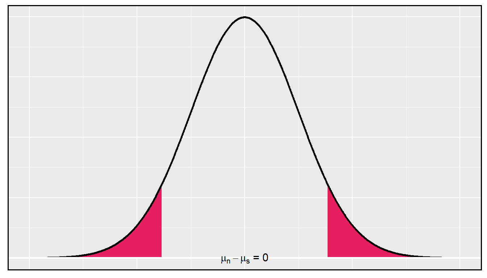
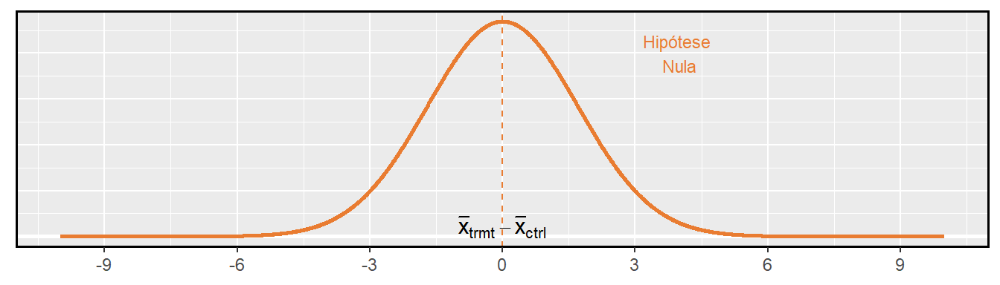
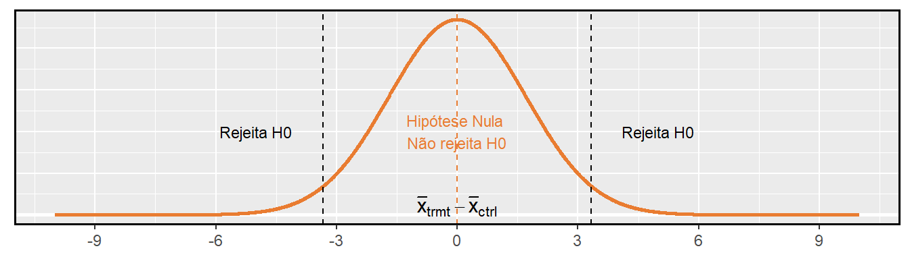
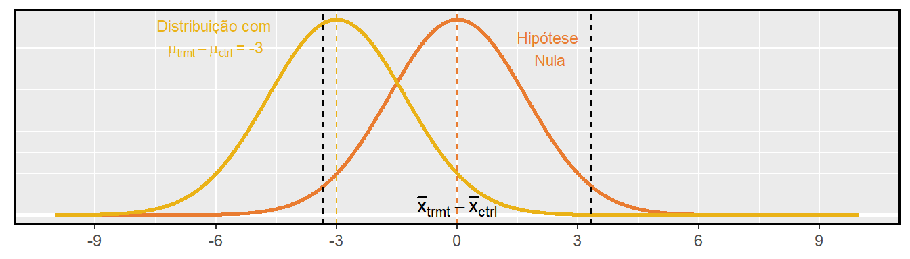
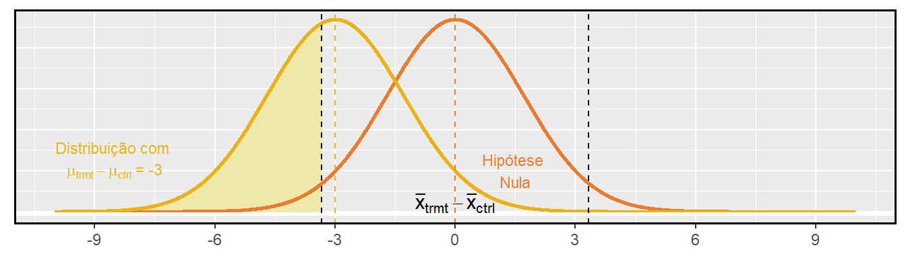
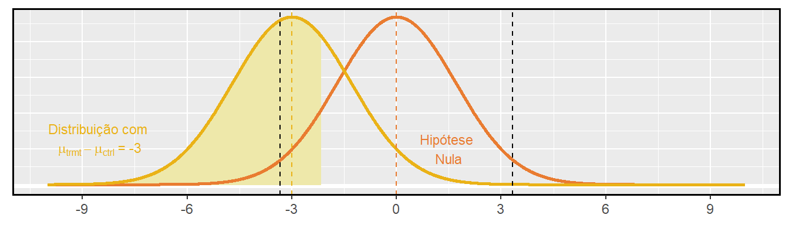

Prefácio
Este material é baseado no livro desenvolvido pela OpenIntro, OpenIntro Statistics, que fornece uma introdução à estatística, a nível de graduação. O material original está disponível no github em formato TeX. Tanto este material adaptado, quanto o original, estão sob mesma licença no Creative Commons.
Juliana Sena de Souza
Márcia Helena Barbian
Lisiane Priscila Roldão Selau
Markus Chagas Stein
Rodrigo Citton Padilha dos Reis

This work is licensed under a Creative Commons Attribution-ShareAlike 3.0 Unported License.

1 Inferência para dados numéricos
O capítulo anterior introduziu uma estrutura para inferência estatística baseada em intervalos de confiança e hipóteses. Neste capítulo, encontramos várias novas estimativas pontuais e cenários. Em cada caso, as idéias de inferência permanecem as mesmas:
Determine qual estimativa pontual ou estatística de teste é útil.
Identifique uma distribuição apropriada para a estimativa pontual ou estatística de teste.
Aplique as ideias de Capítulo anterior usando a distribuição da etapa 2.
1.1 Uma média amostral com a distribuição-\(t\)
Nós exigimos uma grande amostra no Capítulo anterior por dois motivos:
A distribuição amostral de \(\overline{x}\) tende a ser mais normal quando a amostra é grande.
O erro padrão calculado é normalmente muito preciso ao usar uma amostra grande.
Então, o que devemos fazer quando o tamanho da amostra é pequeno? Como vamos discutir mais a frente, se os dados da população forem quase normais, \(\overline{x}\) também seguirá uma distribuição normal, que trata do primeiro problema. A precisão do erro padrão é mais complicada e, para esse desafio, apresentaremos uma nova distribuição chamada distribuição \(t\). Embora enfatizemos o uso da distribuição \(t\) para amostras pequenas, essa distribuição também é geralmente usada para amostras grandes, onde produz resultados semelhantes aos da distribuição normal.
1.1.1 A condição de normalidade
Um caso especial do Teorema Central do Limite terá que ser um dos meios de comunicação de que a amostra será quase normal, enquanto o tamanho da amostra, de acordo com os dados da amostra será quase normal.
Teorema Central do Limite para dados normais: A distribuição amostral da média é quase normal quando as observações da amostra são independentes e veem de uma distribuição quase normal. Isso vale para qualquer tamanho de amostra.
Embora isso pareça um caso especial muito útil, há um pequeno problema. É inerentemente difícil verificar a normalidade em pequenos conjuntos de dados.
Verificando a condição de normalidade: Devemos ter cautela ao verificar a condição de normalidade para amostras pequenas. É importante não só examinar os dados, mas também pensar sobre a origem dos dados. Por exemplo, pergunte: eu esperaria que essa distribuição fosse simétrica e estou confiante de que outliers são raros?
Você pode relaxar a condição de normalidade à medida que o tamanho da amostra aumenta. Se o tamanho da amostra for 10 ou mais, uma ligeira inclinação não é problemática. Quando o tamanho da amostra atinge cerca de 30, a inclinação moderada é razoável. Dados com forte inclinação ou outliers exigem uma análise mais cautelosa.
1.1.2 Introduzindo a distribuição -\(t\)
Nos casos em que usaremos uma amostra pequena para calcular o erro padrão, será útil confiar em uma nova distribuição para cálculos de inferência: a distribuição \(t\). A distribuição-\(t\), mostrada como uma linha sólida na Figura 1.1, tem um formato de sino. No entanto, suas caudas são mais grossas do que as do modelo normal. Isso significa que as observações têm maior probabilidade de cair além de dois desvios padrão da média do que sob a distribuição normal.1
X <- seq(-5, 5, 0.01)
Y <- dnorm(X)
Yt <- dt(X, 2)
ggplot() +
geom_line(aes(X,Y), color = "skyblue3", linetype = "dashed", size=1) + #linha da normal
geom_line(aes(X,Yt), color = "red", size=1) + #linha da t
scale_x_continuous(breaks = seq(-4, 4, 2)) + # arrumar a escala
theme(axis.title = element_blank(), axis.line.y = element_blank(),
axis.text.y = element_blank(), axis.ticks.y = element_blank()) +
theme(panel.border = element_rect(colour = "black", fill=NA, size=1))Figura 1.1: Comparação de uma distribuição \(t\) (linha sólida) e uma distribuição normal (linha pontilhada).
A distribuição-\(t\), sempre centrada em zero, tem um único parâmetro: os graus de liberdade. O grau de liberdade (df) descreve a forma precisa da distribuição-\(t\) em forma de sino. Várias distribuições-\(t\) são mostradas na Figura 1.2. Quando há mais graus de liberdade, a distribuição-\(t\) parece muito com a distribuição normal padrão.
X <- seq(-5, 10, 0.02)
conv <- data.frame(X,
dnorm(X),
dt(X, 8),
dt(X, 4),
dt(X, 2),
dt(X, 1))
colnames(conv) <- c("X", "N", "t8", "t4", "t2", "t1")
require(tidyr)
conv_long <- gather(conv, dist, Y, N:t1, factor_key=TRUE)
names <- c(
`N` = "N(0,1)",
`t8` = "t(8)",
`t4` = "t(4)",
`t2` = "t(2)",
`t1` = "t(1)")
ggplot(data = conv_long) +
geom_line(aes(X, Y, color = dist), size = 1) +
scale_x_continuous(breaks = seq(-5, 10, 2)) +
theme(axis.title = element_blank(), axis.line.y = element_blank(),
axis.text.y = element_blank(), axis.ticks.y = element_blank()) +
labs(color = "Distribuição") +
scale_color_discrete(labels = names) +
theme(legend.position = "bottom") +
theme(panel.border = element_rect(colour = "black", fill=NA, size=1))Figura 1.2: Quanto maiores os graus de liberdade, mais próxima a distribuição t se assemelha ao modelo normal padrão.
Graus de liberdade (gl): Os graus de liberdade descrevem a forma da distribuição-\(t\). Quanto maiores os graus de liberdade, mais próxima a distribuição se aproxima do modelo normal.
Quando os graus de liberdade são cerca de 30 ou mais, a distribuição \(t\) é quase indistinguível da distribuição normal. Mais a frente, relacionamos graus de liberdade com o tamanho da amostra. É muito útil familiarizar-se com distribuição-\(t\), porque nos permite maior flexibilidade do que a distribuição normal ao analisar dados numéricos.
Nós usamos uma tabela-t, parcialmente mostrado na tabela abaixo, no lugar da tabela de probabilidade normal. Na prática, é mais comum usar software estatístico em vez de uma tabela, e você pode utilizar o R, por exemplo, através da função2:
qt(p, df, ncp, lower.tail = TRUE, log.p = FALSE)
Cada linha na tabela-\(t\) representa uma distribuição-\(t\) com diferentes graus de liberdade. As colunas correspondem a probabilidades de cauda. Por exemplo, se sabemos que estamos trabalhando com a distribuição-\(t\) com \(df = 18\), podemos examinar a linha 18, pela tabela abaixo. Se queremos o valor nesta linha que identifica o limite para uma cauda superior de 10%, podemos procurar na coluna onde uma cauda é 0.100. Esse limite é 1.33. Se tivéssemos desejado o corte para os 10% inferiores, usaríamos -1.33. Assim como a distribuição normal, todas as distribuições-\(t\) são simétricas.
| uma cauda (duas caudas) | 0.100 (0.200) | 0.050 (0.100) | 0.025 (0.05) | 0.010 (0.010) | 0.005 (0.010) |
|---|---|---|---|---|---|
| 1 | 3.08 | 6.31 | 12.71 | 31.82 | 63.66 |
| 2 | 1.89 | 2.92 | 4.30 | 6.96 | 9.92 |
| 3 | 1.64 | 2.35 | 3.18 | 4.54 | 5.84 |
| \(\vdots\) | \(\vdots\) | \(\vdots\) | \(\vdots\) | \(\vdots\) | \(\vdots\) |
| 17 | 1.33 | 1.74 | 2.11 | 2.57 | 2.90 |
| 18 | 1.33 | 1.73 | 2.10 | 2.55 | 2.88 |
| 19 | 1.33 | 1.73 | 2.09 | 2.54 | 2.86 |
| 20 | 1.33 | 1.72 | 2.09 | 2.53 | 2.85 |
| \(\vdots\) | \(\vdots\) | \(\vdots\) | \(\vdots\) | \(\vdots\) | \(\vdots\) |
| 400 | 1.28 | 1.65 | 1.97 | 2.34 | 2.59 |
| 500 | 1.28 | 1.65 | 1.96 | 2.33 | 2.59 |
| \(\infty\) | 1.28 | 1.64 | 1.96 | 2.33 | 2.58 |
Assim como um problema de probabilidade normal, primeiro desenhamos a distribuição (Figura 1.3) e sombreamos a área abaixo de -2.10. Para encontrar esta área, identificamos a linha apropriada: \(df=18\). Em seguida, identificamos a coluna contendo o valor absoluto de -2.10; é a terceira coluna. Como estamos procurando apenas uma cauda, examinamos a linha superior da tabela, que mostra que uma área de cauda para um valor na terceira linha corresponde a 0.025. Cerca de 2.5% da distribuição está abaixo de -2.10. No próximo exemplo, encontramos um caso em que o valor exato de \(t\) não está listado na tabela.
X <- seq(-5, 10, 0.01)
Y <- dt(X, 18)
data = data.frame(X,Y)
ggplot(data = data) +
geom_linerange(data = data[data$X < -2.1,], aes(X, ymin = -0.001, ymax = Y), colour="#E6205F") +
geom_path(aes(X,Y), size = 1) +
xlim(-4, 4) +
theme(axis.title = element_blank(), axis.line.y = element_blank(),
axis.text.y = element_blank(), axis.ticks.y = element_blank()) +
geom_hline(yintercept = -0.001, size = 1, color = "white") +
theme(panel.border = element_rect(colour = "black", fill = NA, size = 1))Figura 1.3: A distribuição-t com 18 graus de liberdade. A área abaixo de -2,10 foi sombreada.
Exemplo 1.2 A distribuição-\(t\) com 20 graus de liberdade é mostrada no painel esquerdo da Figura 1.4. Estimar a proporção da distribuição caindo acima de 1.65.
Identificamos a linha na tabela \(t\) usando os graus de liberdade: \(df = 20\). Então procuramos 1.65; não está listado. Ela fica entre a primeira e a segunda coluna. Uma vez que esses valores limitam 1.65, suas áreas de cauda irão ligar a área da cauda correspondente a 1.65. Identificamos a área de cauda da primeira e segunda colunas, 0.050 e 0.10, e concluímos que entre 5% e 10% da distribuição é mais do que 1.65 desvios-padrão acima da média. Se quisermos, podemos identificar a área exata usando software estatístico: 0.0573.
Como antes, primeiro identifique a linha apropriada: \(df = 2\). Em seguida, encontre as colunas que capturam as 3 unidades: \(2.92 < 3 < 4.30\). Usamos a segunda e terceira coluna. Finalmente, encontramos os limites para as áreas da cauda observando os dois valores finais: 0.05 e 0.10. Usamos os dois valores finais porque estamos procurando por duas caudas (simétricas).
X <- seq(-5, 10, 0.02)
Y <- dt(X, 12)
data = data.frame(X,Y)
p1<- ggplot(data = data) +
geom_linerange(data = data[data$X > 1.65,], aes(X, ymin = -0.001, ymax = Y), colour="#EAB217") +
geom_path(aes(X,Y), size = 1) +
xlim(-4, 4) +
theme(axis.title = element_blank(), axis.line.y = element_blank(),
axis.text.y = element_blank(), axis.ticks.y = element_blank()) +
geom_hline(yintercept = -0.001, size = 1, color = "white") +
theme(panel.border = element_rect(colour = "black", fill=NA, size=1))
Y <- dt(X, 2.3)
data = data.frame(X,Y)
p2 <- ggplot(data = data) +
geom_linerange(data = data[data$X > 3 | data$X < -3,],
aes(X, ymin = -0.001, ymax = Y), colour="#EAB217") +
geom_path(aes(X,Y), size = 1) +
xlim(-4, 4) +
theme(axis.title = element_blank(), axis.line.y = element_blank(),
axis.text.y = element_blank(), axis.ticks.y = element_blank()) +
geom_hline(yintercept = -0.001, size = 1, color = "white") +
theme(panel.border = element_rect(colour = "black", fill=NA, size=1))
require(gridExtra)
grid.arrange(p1, p2, ncol = 2)Figura 1.4: Esquerda: A distribuição-t com 20 graus de liberdade, com a área acima de 1,65 sombreada. Direita: A distribuição-t com 2 graus de liberdade, com a área além de 3 unidades sombreada
1.1.3 Condições para usar a distribuição-t para inferência de uma média
Para prosseguir com a distribuição-\(t\) para inferência sobre uma única média, primeiro verificamos duas condições.
Independência das observações. Verificamos essa condição como fizemos antes. Coletamos uma amostra aleatória simples de menos 10% da população, ou se os dados são de um experimento ou processo aleatório, nós verificamos com o melhor de nossas habilidades que as observações eram independentes.
As observações vêm de uma distribuição quase normal. Essa segunda condição é difícil de ser verificada com pequenos conjuntos de dados. Muitas vezes (i) observamos uma plotagem dos dados para desvios óbvios do modelo normal e (ii) consideramos se quaisquer experiências anteriores nos alertam que os dados podem não estar quase normais.
Ao examinar uma média amostral e erro padrão estimado de uma amostra de observações independentes e quase normais de \(n\), usamos uma distribuição \(t\) com \(n-1\) graus de liberdade (df). Por exemplo, se o tamanho da amostra fosse 19, então usaríamos a distribuição-\(t\) com \(df =19-1=18\) graus de liberdade e prosseguiríamos exatamente como fizemos no Capítulo anterior, exceto que agora usamos a distribuição-\(t\).
Quando usar a distribuição-\(t\): Use a distribuição t para inferência da média da amostra quando as observações são independentes e quase normais. Você pode relaxar a condição de normalidade à medida que o tamanho da amostra aumenta. Por exemplo, a distribuição de dados pode ser moderadamente distorcida quando o tamanho da amostra é de pelo menos 30.
1.1.4 Uma amostra t - Intervalos de Confiança
Os golfinhos estão no topo da cadeia alimentar oceânica, o que faz com que substâncias perigosas, como o mercúrio, se concentrem em seus órgãos e músculos. Este é um problema importante para os golfinhos e outros animais, como os humanos, que ocasionalmente os comem. Por exemplo, isso é particularmente relevante no Japão, onde as refeições escolares incluem golfinhos às vezes4.

Figura 1.5: Um golfinho de risso
Aqui nós identificamos um intervalo de confiança para o conteúdo médio de mercúrio no músculo de golfinhos usando uma amostra de 19 golfinhos da região de Taiji, no Japão.5 Os dados estão resumidos na Tabela 1.1. Os valores mínimo e máximo observados podem ser usados para avaliar se existem ou não valores óbvios ou outliers.
num <- c(19, 4.4, 2.3, 1.7, 9.2)
names(num) <- c("n", "média", "s", "mínimo", "máximo")
knitr::kable(t(num),
caption = "Resumo do conteúdo de mercúrio no músculo de 19 golfinhos de Risso da área de Taiji. As medições são em mu/wet g (microgramas de mercúrio por grama úmida de músculo).")| n | média | s | mínimo | máximo |
|---|---|---|---|---|
| 19 | 4.4 | 2.3 | 1.7 | 9.2 |
As observações são uma amostra aleatória simples, portanto a independência é razoável. As estatísticas resumidas na Tabela 1.1 não sugerem qualquer distorção ou outliers, todas as observações estão dentro de 2.5 desvios padrão da média. Com base nessa evidência, a suposição de normalidade parece razoável.
No modelo normal, usamos \(z ^ {\star}\) e o erro padrão para determinar a largura de um intervalo de confiança. Revisamos a fórmula do intervalo de confiança quando usamos a distribuição-\(t\):
\[\begin{eqnarray*} \bar{x} \ \pm\ t^{\star}_{df}EP \tag{1.1} \end{eqnarray*}\]
A média da amostra e o erro padrão estimado são computados como antes (\(\bar{x} = 4.4\) e \(EP = s/\sqrt{n} = 0.528\)). O valor \(t^{\star}_{df}\) é um corte que obtemos com base no nível de confiança e na distribuição \(t\) com \(df\) graus de liberdade. Antes de determinar esse corte, primeiro precisamos dos graus de liberdade.
Graus de liberdade para uma amostra única: Se a amostra tem \(n\) observações e estamos examinando uma única média, então usamos uma distribuição-\(t\) com \(df = n-1\) graus de liberdade.
Em nosso exemplo atual, devemos usar a distribuição \(t\) com \(df = 19-1 = 18\) graus de liberdade. Em seguida, identificando que o \(t_{18}^{\star}\) é semelhante ao que encontramos como \(z^{\star}\).
Para um intervalo de confiança de 95%, queremos encontrar o limite \(t^{\star}_{18}\) tal que 95% da distribuição-\(t\) é entre -\(t^{\star}_{18}\) e \(t^{\star}_{18}\).
Na tabela-\(t\), encontre a coluna com área totalizando 0.05 nas duas caudas (terceira coluna) e, em seguida, a linha com 18 graus de liberdade: \(t^{\star}_{18} = 2.10\).
Geralmente o valor de \(t^{\star}_{df}\) é um pouco maior do que o que obteríamos sob o modelo normal com \(z^{\star}\).
Finalmente, podemos substituir todos os nossos valores na Equação (1.1) para criar o intervalo de confiança de 95% para o conteúdo médio de mercúrio nos músculos dos golfinhos de Risso que passam pela área de Taiji.:
\[\begin{eqnarray*} \bar{x} \ \pm\ t^{\star}_{18}EP \quad \to \quad 4.4 \ \pm\ 2.10 \times 0.528 \quad \to \quad (3.29, 5.51) \end{eqnarray*}\]
Temos 95% de confiança de que o teor médio de mercúrio nos músculos dos golfinhos de Risso está entre 3.29 e 5.51 \(\mu\) g/grama, o que é considerado extremamente alto.
Encontrando um intervalo de confiança \(t\) para a média: Com base em uma amostra de observações independentes e quase normais de \(n\), um intervalo de confiança para a média populacional é
\[\begin{eqnarray*} \bar{x} \ \pm\ t^{\star}_{df}EP \end{eqnarray*}\]
onde \(\bar{x}\) é a média da amostra, \(t^{\star}_{df}\) corresponde ao nível de confiança e graus de liberdade, e \(EP\) é o erro padrão estimado pela amostra.
O erro padrão:\(EP = \frac{0.069}{\sqrt{15}} = 0.0178\). Graus de liberdade: \(df = n - 1 = 14\).
Olhando na coluna onde duas caudas é de 0.100 (para um intervalo de confiança de 90%) e linha \(df=14\), nós identificamos \(t^{\star}_{14} = 1.76\).
1.1.5 Uma amostra de testes-t
O corredor típico dos EUA está ficando mais rápido ou mais lento com o tempo? Consideramos essa questão no contexto da Corrida das Flores de Cerejeira, que é uma corrida de 10 milhas em Washington, DC cada primavera.9
O tempo médio de todos os corredores que terminaram a corrida Cherry Blossom em 2006 foi de 93.29 minutos (93 minutos e cerca de 17 segundos). Queremos determinar o uso de dados de 100 participantes na Corrida das Floradas de Cerejeira de 2012 para descobrir se os corredores nesta corrida estão ficando mais rápidos ou mais lentos contra a outra possibilidade de que não houve nenhuma mudança.
require(openintro)
data(run10Samp)
d <- run10Samp
ggplot(data = d) +
geom_histogram(aes(time), bins = 10, color = 'white', fill = "skyblue2") +
labs(x = "Tempo (em minutos)", y = "Frequência")+
theme(panel.border = element_rect(colour = "black", fill=NA, size=1))Figura 1.6: Um histograma de tempo para os dados da amostra Cherry Blossom Race.
Com a independência satisfeita e ligeira inclinação que não é uma preocupação para uma amostra desse tamanho, podemos prosseguir com a realização de um teste de hipótese usando a distribuição-\(t\).
Quando usamos uma distribuição-\(t\), usamos um T-escore (igual ao Z-escore): Para nos ajudar a lembrar de usar a distribuição-\(t\), usamos \(T\) para representar a estatística de teste, e geralmente chamamos isso de T-escore. O escore Z e o escore T são calculados exatamente da mesma maneira e são conceitualmente idênticos: cada um representa quantos erros-padrão o valor observado é do valor nulo.
1.2 Dados pareados
Os livros didáticos são realmente mais baratos online? Aqui nós comparamos o preço dos livros didáticos na livraria da Universidade da Califórnia, Los Angeles (UCLA) e os preços na Amazon.com. Setenta e três cursos da UCLA foram amostrados aleatoriamente na primavera de 2010.13 Uma parte do conjunto de dados é mostrada na Tabela 1.2.
library(openintro)
data(textbooks)
knitr::kable(head(textbooks), align = "c",
caption = "Seis casos do conjunto de dados 'livros texto'.")| deptAbbr | course | ibsn | uclaNew | amazNew | more | diff |
|---|---|---|---|---|---|---|
| Am Ind | C170 | 978-0803272620 | 27.67 | 27.95 | Y | -0.28 |
| Anthro | 9 | 978-0030119194 | 40.59 | 31.14 | Y | 9.45 |
| Anthro | 135T | 978-0300080643 | 31.68 | 32.00 | Y | -0.32 |
| Anthro | 191HB | 978-0226206813 | 16.00 | 11.52 | Y | 4.48 |
| Art His | M102K | 978-0892365999 | 18.95 | 14.21 | Y | 4.74 |
| Art His | 118E | 978-0394723693 | 14.95 | 10.17 | Y | 4.78 |
1.3 Observações Pareadas
Cada livro-texto tem dois preços correspondentes no conjunto de dados: um para a livraria da UCLA e outro para a Amazon. Portanto, cada preço de livro didático da livraria da UCLA tem uma correspondência natural com um preço de livro didático da Amazon. Quando dois conjuntos de observações têm essa correspondência especial, eles são pareados.
Dados pareados: Dois conjuntos de observações são pareados se cada observação em um conjunto tiver uma correspondência especial ou conexão com exatamente uma observação no outro conjunto de dados.
Para analisar dados pareados, é frequentemente útil observar a diferença nos resultados de cada par de observações. No conjunto de dados livro texto, olhamos para as diferenças nos preços, que é representado como a variável dif nos dados livro texto. Aqui as diferenças são tomadas como
\[\begin{eqnarray*} \text{preço UCLA} - \text{preço Amazon} \end{eqnarray*}\]
para cada livro. É importante que subtraímos sempre usando uma ordem consistente; aqui os preços da Amazon são sempre subtraídos dos preços da UCLA. Um histograma dessas diferenças é mostrado na Figura 1.7. Usar diferenças entre observações pareadas é uma maneira comum e útil de analisar dados pareados.
ggplot2::ggplot(data = textbooks) +
geom_histogram(aes(x = diff), bins = 8, color = "white", fill = "#E97C31") +
labs(x = "Preço UCLA - Preço Amazon (USD)", y = "Frequência")+
theme(panel.border = element_rect(colour = "black", fill=NA, size=1))Figura 1.7: Histograma da diferença de preço para cada livro amostrado. Estes dados são fortemente distorcidos.
1.3.1 Inferência para dados pareados
Para analisar um conjunto de dados pareados, simplesmente analisamos as diferenças. Podemos usar as mesmas técnicas de distribuição-\(t\) que aplicamos na última seção.
sum.estat <- c(length(textbooks$diff),
mean(textbooks$diff),
sd(textbooks$diff))
names(sum.estat) <- c("n", "média", "devio padrão")
knitr::kable(t(sum.estat), align = "c",
caption = "Estatísticas resumidas para as diferenças de preço. Havia 73 livros, então há 73 diferenças.")| n | média | devio padrão |
|---|---|---|
| 73 | 12.76164 | 14.2553 |
Estamos considerando dois cenários: não há diferença ou há alguma diferença nos preços médios.
\begin{cases} H_0: {dif}=0 & \ H_1: {dif}0 & \end{cases}
A distribuição-\(t\) pode ser usada para essa aplicação? As observações são baseadas em uma amostra aleatória simples de menos de 10% de todos os livros vendidos na livraria, portanto a independência é razoável. Enquanto a distribuição é fortemente distorcida, a amostra é razoavelmente grande (\(n = 73\)), para que possamos prosseguir. Como as condições são razoavelmente satisfeitas, podemos aplicar a distribuição-\(t\) a essa configuração.
Calculamos o erro padrão associado a \(\bar{x}_{dif}\) usando o desvio padrão das diferenças (\(s_{_{dif}}=14.26\)) e o número de diferenças (\(n_{_{dif}}=73\)): \[EP_{\bar{x}_{dif}} = \frac{s_{dif}}{\sqrt{n_{dif}}} = \frac{14.26}{\sqrt{73}} = 1.67\].
Para visualizar o p-valor, a distribuição amostral de \(\bar{x}_{dif}\) é desenhado como se \(H_0\) fosse verdadeira, que é mostrado na Figura 1.8. O p-valor é representado pelas duas caudas (muito) pequenas. Para encontrar as áreas de cauda, calculamos a estatística de teste, que é o T-escore de \(\bar{x}_{dif}\) sob a condição nula de que a diferença média real é 0:
\[\begin{align*} T = \frac{\bar{x}_{dif} - 0}{EP_{x_{dif}}} = \frac{12.76 - 0}{1.67} = 7.65 \end{align*}\]
Os graus de liberdade são \(df = 73 - 1 = 72\). Esse valor é maior que qualquer outro na linha de 70 GL (arredondamos para baixo para \(GL\) ao usar a tabela), significando que o p-valor bilateral é menor que 0.01. Se usássemos software estatístico, descobriríamos que o p-valor é menor que 1 em 10 bilhões!
Como o p-valor é menor que 0.05, rejeitamos a hipótese nula. Nós encontramos evidências convincentes de que a Amazon era, em média, mais barata do que a livraria da UCLA para os livros didáticos da UCLA.
X <- seq(-15, 15, 0.01)
Yt <- dt(X, 72)
ggplot() +
geom_line(aes(X,Yt), size = 1) + #linha da t
theme(axis.title = element_blank(), axis.line.y = element_blank(), axis.text.y = element_blank(),
axis.ticks.y = element_blank(), axis.text.x = element_blank()) +
scale_x_continuous(breaks = seq(-12.76, 12.76, 12.76)) +
annotate(geom = "text", x = -12.76, y = 0.15,
label = "cauda a \n esquerda", size = 3, color = "#EAB217") +
annotate(geom = "text", x = 12.76, y = 0.15,
label = "cauda a \n direita", size = 3, color = "#EAB217") +
geom_segment(aes(x = -12.76, xend = -12.76, y = 0.10, yend = 0.01),
arrow = arrow(length = unit(0.1, "cm")), color = "#EAB217") +
geom_segment(aes(x = 12.76, xend = 12.76, y = 0.10, yend = 0.01),
arrow = arrow(length = unit(0.1, "cm")), color = "#EAB217") +
annotate(geom = "text", x = 0, y = -0.02, label = expression(mu[0]*' = 0'), size = 3) +
annotate(geom = "text", x = 12.76, y = -0.02,
label = expression(bar(x)[diff]*" = 12.76"), size = 3) +
geom_segment(aes(x = -15, y = 0, xend = -12.76, yend = 0), color = "#EAB217", size = 1) +
geom_segment(aes(x = 12.76, y = 0, xend = 15, yend = 0), color = "#EAB217", size = 1)+
theme(panel.border = element_rect(colour = "black", fill=NA, size=1))Figura 1.8: Distribuição da amostragem para a diferença média dos preços dos livros, se a diferença média real for zero.
1.4 Diferença entre duas médias
Nesta seção, consideramos uma diferença em duas médias populacionais, \(\mu_1 - \mu_2\), sob a condição de que os dados não estejam pareados. Assim como com uma única amostra, identificamos condições para garantir que podemos usar a distribuição-\(t\) com uma estimativa pontual da diferença, \(\bar{x}_1 - \bar{x}_2\).
Aplicamos esses métodos em três contextos: determinando se as células-tronco podem melhorar a função cardíaca, explorando o impacto do hábito de fumar das mulheres grávidas em recém-nascidos e investigando se há evidência estatisticamente significativa de que uma variação de um exame é mais difícil que outra variação. Esta seção é motivada por questões como “Existem evidências convincentes de que recém-nascidos de mães que fumam têm um peso médio ao nascer diferente do que recém-nascidos de mães que não fumam?”
1.4.1 Intervalo de confiança para diferença de médias
O tratamento com células-tronco embrionárias (CTE) ajuda a melhorar a função cardíaca após um ataque cardíaco? A Tabela 1.4 contém estatísticas resumidas de um experimento para testar CTE em ovelhas que tiveram um ataque cardíaco. Cada uma dessas ovelhas foi aleatoriamente designada para o grupo CTE ou controle, e a mudança na capacidade de bombeamento dos corações foi medida no estudo. Um valor positivo corresponde ao aumento da capacidade de bombeamento, o que geralmente sugere uma recuperação mais forte. Nosso objetivo será identificar um intervalo de confiança de 95% para o efeito de CTE na mudança na capacidade de bombeamento do coração em relação ao grupo controle.
Uma estimativa pontual da diferença na variável de bombeamento do coração pode ser encontrada usando a diferença nas médias da amostra:
\[\begin{eqnarray*} \bar{x}_{cte} - \bar{x}_{con}\ =\ 3.50 - (-4.33)\ =\ 7.83 \end{eqnarray*}\]
dados <- matrix(NA, ncol = 3, nrow = 2)
dados[1,] <- c(9, 3.5, 5.17); dados[2,] <- c(9, -4.33, 2.76)
colnames(dados) <- c("n", "média", "desvio")
rownames(dados) <- c("CTEs", "Controle")
knitr::kable(dados, align = "c", caption = "Estatísticas resumidas do estudo com células-tronco embrionárias.")| n | média | desvio | |
|---|---|---|---|
| CTEs | 9 | 3.50 | 5.17 |
| Controle | 9 | -4.33 | 2.76 |
Usando a distribuição-\(t\) para diferença nas médias: A distribuição-\(t\) pode ser usada para inferência quando se trabalha com a diferença padronizada de duas médias se (1) cada amostra satisfizer as condições para usar a distribuição-\(t\) e (2) as amostras são independentes.
Verificamos as duas condições exigidas:
Neste estudo, as ovelhas eram independentes umas das outras. Além disso, as distribuições na Figura 1.9 não mostram nenhum desvio claro da normalidade, onde observamos exceções proeminentes em particular para amostras tão pequenas. Estes achados implicam que cada média amostral poderia ser modelada usando uma distribuição-\(t\).
As ovelhas em cada grupo também eram independentes umas das outras.
Como ambas as condições são atendidas, podemos usar a distribuição-\(t\) para modelar a diferença das duas médias amostrais.
data(stem.cells)
stem.cells$dif = stem.cells$after - stem.cells$before #diferença
labs <- c(
ctrl = "Controle \n (sem tratamento)",
esc = "Transplante de células-tronco \n embrionárias"
)
ggplot(data = stem.cells) +
geom_histogram(aes(x = dif), color = "white", bins = 11, fill = "#E6205F") +
facet_grid(~trmt, labeller = as_labeller(labs)) +
labs(x = "Mudança na função de bombeamento do coração", y = NULL)+
theme(panel.border = element_rect(colour = "black", fill=NA, size=1))Figura 1.9: Histogramas para o grupo de células-tronco embrionárias e o grupo controle. Valores mais altos estão associados a uma melhoria maior. Não vemos qualquer evidência de distorção nesses dados; no entanto, vale a pena notar que a distorção seria difícil de detectar com uma amostra tão pequena.
Podemos quantificar a variabilidade na estimativa pontual, \(\bar{x}_{cte} - \bar{x}_{con}\), usando a seguinte fórmula para seu erro padrão:
\[\begin{eqnarray*} EP_{\bar{x}_{cte} - \bar{x}_{con}} = \sqrt{\frac{\sigma_{cte}^2}{n_{cte}} + \frac{\sigma_{con}^2}{n_{con}}} \end{eqnarray*}\]
Geralmente estimamos esse erro padrão usando estimativas de desvio padrão com base nas amostras:
\[\begin{align*} EP_{\bar{x}_{cte} - \bar{x}_{con}} &= \sqrt{\frac{\sigma_{cte}^2}{n_{cte}} + \frac{\sigma_{con}^2}{n_{con}}} \\ &\approx \sqrt{\frac{s_{cte}^2}{n_{cte}} + \frac{s_{con}^2}{n_{con}}} = \sqrt{\frac{5.17^2}{9} + \frac{2.76^2}{9}} = 1.95 \end{align*}\]
Como usaremos a distribuição-\(t\), também devemos identificar os graus de liberdade apropriados. Isso pode ser feito usando um software de computador. Uma técnica alternativa é usar o \(min[n_1 - 1, n_2 - 1]\), que é o método que normalmente aplicaremos nos exemplos e na prática orientada.16
Distribuição de uma diferença de médias amostrais: A diferença amostral de duas médias, \(\bar{x}_1 - \bar{x}_2\), pode ser modelado usando o distribuição-\(t\) e o erro padrão
\[\begin{eqnarray} \textstyle EP_{\bar{x}_{1} - \bar{x}_{2}} = \sqrt{\frac{s_1^2}{n_1} + \frac{s_2^2}{n_2}} \tag{1.2} \end{eqnarray}\]
quando cada amostra média pode ser modelada usando uma distribuição-\(t\) e as amostras são independentes. Para calcular os graus de liberdade, use um software estatístico ou o menor de \(n_1 - 1\) e \(n_2 - 1\).
Usaremos a diferença de amostra e o erro padrão para essa estimativa pontual de nossos cálculos anteriores:
\[\begin{align*} & \bar{x}_{cte} - \bar{x}_{con} = 7.83 \\ & EP = \sqrt{\frac{5.17^2}{9} + \frac{2.76^2}{9}} = 1.95 \end{align*}\]
Usando \(GL = 8\), podemos identificar o \(t^{\star}_{df}\) apropriado, \(t^{\star}_{8}\) para intervalo de confiança de 95% que é 2,31. Finalmente, podemos inserir os valores na fórmula do intervalo de confiança:
\[\begin{align*} \text{estimativa pontual} \ \pm\ t^{\star}EP \quad\rightarrow\quad 7.83 \ \pm\ 2.31\times 1.95 \quad\rightarrow\quad (3.32, 12.34) \end{align*}\]
Temos 95% de confiança de que as células-tronco embrionárias melhoram a função de bombeamento do coração em ovelhas que sofreram um ataque cardíaco de 3.32% a 12.34%.
1.4.2 Testes de hipóteses baseados em uma diferença de médias
Um conjunto de dados chamado bebe_fumo representa uma amostra aleatória de 150 casos de mães e seus recém-nascidos na Carolina do Norte durante um ano. Quatro casos deste conjunto de dados são representados na Tabela 1.5. Estamos particularmente interessados em duas variáveis: peso e fumo. A variável peso representa os pesos dos recém-nascidos e a variável fumo descreve quais mães fumaram durante a gravidez.
Gostaríamos de saber se há evidências convincentes de que os recém-nascidos de mães que fumam têm um peso médio ao nascer diferente do que os recém-nascidos de mães que não fumam? Usaremos o exemplo da Carolina do Norte para tentar responder a essa pergunta. O grupo de fumantes inclui 50 casos e o grupo de não fumantes contém 100 casos, representados na Figura 1.10.
data(births)
knitr::kable(head(births[,c(1:3, 7:9)], 4), align = "c",
caption = "Quatro casos do conjunto de dados bebe_fumo.")| fAge | mAge | weeks | weight | sexBaby | smoke |
|---|---|---|---|---|---|
| 31 | 30 | 39 | 6.88 | male | smoker |
| 34 | 36 | 39 | 7.69 | male | nonsmoker |
| 36 | 35 | 40 | 8.88 | male | nonsmoker |
| 41 | 40 | 40 | 9.00 | female | nonsmoker |
labs <- c(
smoker = "Mães Fumantes",
nonsmoker = "Mães Não-Fumantes"
)
ggplot(data = births) +
geom_histogram(aes(x = weight), color = "white", bins = 11, fill = "#EAB217") +
facet_grid(~smoke, labeller = as_labeller(labs)) +
scale_x_continuous(breaks = seq(0, 10, 2)) +
theme(axis.ticks.y = element_blank(), axis.line.y = element_blank(), axis.text.y = element_blank()) +
labs(x = "Peso (em libras) dos recém nascidos", y = NULL)+
theme(panel.border = element_rect(colour = "black", fill=NA, size=1))Figura 1.10: O painel superior representa pesos de nascimento para bebês cujas mães fumaram. O painel inferior representa os pesos ao nascimento de bebês cujas mães não fumaram. As distribuições exibem moderada a forte e forte inclinação, respectivamente
A hipótese nula representa o caso de nenhuma diferença entre os grupos.
\begin{cases} H_0: {n} - {s} = 0 & \
H_1: {n} - {s} 0 & \end{cases}
onde \(\mu_{n}\) representa mães não fumantes e \(\mu_s\) representa mães que fumavam.
Verificamos as duas condições necessárias para aplicar a distribuição-\(t\) à diferença nas médias amostrais. (1) Como os dados provêm de uma amostra aleatória simples e consistem em menos de 10% de todos os casos, as observações são independentes. Além disso, embora cada distribuição seja fortemente distorcida, os tamanhos de amostra de 50 e 100 tornariam razoável modelar cada um separadamente usando uma distribuição-\(t\). A inclinação é razoável para esses tamanhos de amostra de 50 e 100. (2) O raciocínio de independência aplicado em (1) também garante que as observações em cada amostra sejam independentes. Como ambas as condições são satisfeitas, a diferença nas médias da amostra pode ser modelada usando uma distribuição-\(t\).
sm <- matrix(NA, ncol = 2, nrow = 3)
sm[1,] <- as.numeric(aggregate(births$weight, list(births$smoke), mean)[,2])
sm[2,] <- as.numeric(aggregate(births$weight, list(births$smoke), sd)[,2])
sm[3,] <- c(50,100)
colnames(sm) <- c('Não Fumante', 'Fumante')
rownames(sm) <- c('média', 'desvio', 'n')
knitr::kable(round(sm,2), align = "c", caption = "Estatísticas resumidas para o conjunto de dados")| Não Fumante | Fumante | |
|---|---|---|
| média | 7.18 | 6.78 |
| desvio | 1.43 | 1.60 |
| n | 50.00 | 100.00 |
Prática Orientada 1.9 As estatísticas resumidas na Tabela 1.6 pode ser útil para este exercício.17
- Qual é a estimativa pontual da diferença de população?, \(\mu_{n} - \mu_{s}\)?
- Calcule o erro padrão da estimativa pontual da parte (a).
Para descrever o p-valor, desenhamos a distribuição da estimativa pontual como se \(H_0\) fosse verdadeiro e áreas de sombra representando pelo menos tanta evidência contra \(H_0\) quanto o que foi observado. Ambas as caudas estão sombreadas porque é um teste bilateral.
set.seed(1)
X <- seq(-4, 4, 0.01)
Y <- dnorm(X)
gg <- data.frame(X,Y)
ggplot(data = gg, mapping = aes(x = X, y = Y)) +
geom_linerange(data = gg[gg$X < -1.54 | gg$X > 1.54,], aes(X, ymin = 0, ymax = Y), colour="#E6205F") +
geom_path(size = 1) +
geom_hline(yintercept = 0, size = 1, color = "white") + labs(x = NULL) +
theme(axis.title.y = element_blank(), axis.text.y = element_blank(), axis.ticks.y = element_blank()) +
theme(axis.title.x = element_blank(), axis.text.x = element_blank(), axis.ticks.x = element_blank()) +
annotate(geom = "text", x = 0, y = 0, label = expression(mu[n]-mu[s]*' = 0'), size = 4) +
theme(panel.border = element_rect(colour = "black", fill=NA, size=1))
Exemplo 1.11 Calcule o p-valor do teste de hipótese usando a figura do Exemplo 1.10 e avalie as hipóteses usando um nível de significância de \(\alpha=0.05\).
Começamos calculando o T-escore:
\[\begin{eqnarray*} T = \frac{\ 0.40 - 0\ }{0.26} = 1.54 \end{eqnarray*}\]
Em seguida, comparamos esse valor com valores na tabela \(T\), onde usamos o menor de \(n_n-1 = 99\) e \(n_s - 1 = 49\) como os graus de liberdade: \(GL = 49\). O T-escore fica entre a primeira e a segunda colunas na linha \(GL = 49\) da tabela \(t\), o que significa que o p-valor bilateral fica entre 0.10 e 0.20. Este p-valor é maior que o valor de significância, 0.05, então nós falhamos em rejeitar a hipótese nula. Não há evidências suficientes para dizer que há uma diferença no peso médio ao nascer de recém-nascidos de mães da Carolina do Norte que fumaram durante a gravidez e recém-nascidos de mães da Carolina do Norte que não fumaram durante a gravidez.
Embora tenhamos usado esse conjunto de dados relativamente pequeno como exemplo, conjuntos de dados maiores mostram que as mulheres que fumam tendem a ter recém-nascidos menores. De fato, algumas pessoas na indústria do tabaco realmente tiveram a audácia de citar benefícios em fumar:
É verdade. Os bebês nascidos de mulheres que fumam são menores, mas são tão saudáveis quanto os bebês nascidos de mulheres que não fumam. E algumas mulheres preferem ter bebês menores. - Joseph Cullman.
Checagem de fatos: os bebês de mulheres que fumam não são tão saudáveis quanto os bebês de mulheres que não fumam.20
1.4.3 Estudo de caso: duas versões de um exame
Uma instrutor decidiu executar duas pequenas variações do mesmo exame. Antes de distribuir os exames, ele misturou os exames para garantir que cada aluno recebesse uma versão aleatória. As estatísticas resumidas de como os alunos se saíram nesses dois exames são mostradas na Tabela 1.7. Antecipando as reclamações dos alunos que fizeram o exame da versão B, ela gostaria de avaliar se a diferença observada nos grupos é tão grande que fornece evidências convincentes de que a versão B era mais difícil (em média) do que a versão A.
est_res <- matrix(c(30, 79.4, 14, 45, 100, 27, 74.1, 20, 32, 100),
ncol = 5, nrow = 2, byrow = TRUE)
rownames(est_res) <- c("A", "B")
colnames(est_res) <- c("n", "média", "desvio", "min", "max")
knitr::kable(est_res, align = "c",
caption = "Estatísticas resumidas das pontuações para cada versão do exame.")| n | média | desvio | min | max | |
|---|---|---|---|---|---|
| A | 30 | 79.4 | 14 | 45 | 100 |
| B | 27 | 74.1 | 20 | 32 | 100 |
Prática Orientada 1.13 Avaliar as hipóteses na Prática Orientada 1.12 usando a distribuição-\(t\), devemos primeiro verificar as suposições.22
- Parece razoável que as pontuações sejam independentes dentro de cada grupo?
- E sobre a condição de normalidade/ inclinação das observações em cada grupo?
- Você acha que os escores dos dois grupos seriam independentes um do outro, ou seja, as duas amostras são independentes?
Depois de verificar as condições de cada amostra e confirmar que as amostras são independentes uma da outra, estamos prontos para realizar o teste usando a distribuição-\(t\). Neste caso, estamos estimando a verdadeira diferença nas pontuações médias dos testes usando os dados da amostra, então a estimativa pontual é \(\bar{x}_A - \bar{x}_B = 5.3\). O erro padrão da estimativa pode ser calculado como
\[\begin{eqnarray*} EP = \sqrt{\frac{s_A^2}{n_A} + \frac{s_B^2}{n_B}} = \sqrt{\frac{14^2}{30} + \frac{20^2}{27}} = 4.62 \end{eqnarray*}\]
Finalmente, construímos a estatística de teste:
\[\begin{eqnarray*} T = \frac{\text{estimativa pontual} - \text{valor nulo}}{EP} = \frac{(79.4-74.1) - 0}{4.62} = 1.15 \end{eqnarray*}\]
Se tivermos um computador à mão, podemos identificar os graus de liberdade como 45.97. Caso contrário, usamos o menor de \(n_1-1\) e \(n_2-1\): \(GL=26\).
set.seed(1)
X <- seq(-4, 4, 0.01)
Y <- dt(X, df = 26)
gg <- data.frame(X,Y)
ggplot(data = gg, mapping = aes(x = X, y = Y)) +
geom_linerange(data = gg[gg$X < -1.15 | gg$X > 1.15,], aes(X, ymin = 0, ymax = Y),
colour="#E6205F") +
geom_path(size = 1) +
geom_hline(yintercept = 0, color = "white", size = 1) + labs(x = NULL) +
scale_x_continuous(breaks = seq(-3, 3, 1)) +
theme(axis.title.y = element_blank(), axis.text.y = element_blank(), axis.ticks.y = element_blank())+
theme(panel.border = element_rect(colour = "black", fill=NA, size=1))Figura 1.11: A distribuição-t com 26 graus de liberdade.
Examinamos a linha \(GL = 26\) na tabela-\(t\). Como esse valor é menor que o valor na coluna da esquerda, o p-valor é maior que 0,200 (duas caudas!). Como o p-valor é tão grande, não rejeitamos a hipótese nula. Ou seja, os dados não mostram convincentemente que uma versão de exame é mais difícil do que a outra, e a professora não deve ser convencida de que deve adicionar pontos aos resultados do exame da Versão B.
1.4.4 Resumo da inferência usando a distribuição-\(t\)
Testes de hipótese: Ao aplicar a distribuição-\(t\) para um teste de hipótese, procedemos da seguinte forma:
Escreva hipóteses apropriadas.
Verificar condições para usar o distribuição-\(t\).
Uma amostra ou diferenças de dados pareados: as observações (ou diferenças) devem ser independentes e quase normais. Para tamanhos de amostra maiores, podemos relaxar o requisito quase normal, e não é problemática uma ligeira inclinação para tamanhos de amostra de 15, inclinação moderada para tamanhos de amostra de 30 e inclinação forte para tamanhos de amostra de 60.
Para uma diferença de médias, quando os dados não estão pareados: cada média de amostra deve satisfazer separadamente as condições de uma amostra para a distribuição-\(t\), e os dados nos grupos também devem ser independentes.
Calcule a estimativa pontual de interesse, o erro padrão e os graus de liberdade. Para \(GL\), use \(n-1\) para uma amostra, e para duas amostras use um software estatístico ou o menor entre \(n_1 - 1\) e \(n_2 - 1\).
Calcular o T-escore e o p-valor.
Faça uma conclusão com base no p-valor e escreva uma conclusão no contexto e em linguagem simples para que qualquer pessoa possa entender o resultado.
Intervalos de Confiança: Da mesma forma, o seguinte é como geralmente calculamos um intervalo de confiança usando um distribuição-\(t\):
Verifique as condições para usar a distribuição-\(t\). (Veja acima.)
Calcule a estimativa pontual de interesse, o erro padrão, os graus de liberdade e \(t^{\star}_{GL}\).
Calcule o intervalo de confiança usando a fórmula geral, estimativa pontual \(\pm\ t_{GL}^{\star} EP\).
Coloque as conclusões no contexto e em linguagem clara, para que até mesmo os não estatísticos possam entender os resultados.
1.4.5 Examinando a fórmula do erro padrão (tópico especial)
A fórmula para o erro padrão da diferença entre duas médias é semelhante à fórmula para outros erros padrões. Lembre-se de que o erro padrão de uma única média,\(\bar{x}_1\), pode ser aproximado por
\[\begin{align*} EP_{\bar{x}_1} = \frac{s_1}{\ \sqrt{n_1}\ } \end{align*}\]
onde \(s_1\) e \(n_1\) representam o desvio padrão amostral e o tamanho da amostra.
O erro padrão da diferença de duas médias amostrais pode ser construído a partir dos erros padrão das amostras separadas:
\[\begin{eqnarray} EP_{\bar{x}_{1} - \bar{x}_{2}} = \sqrt{EP_{\bar{x}_1}^2 + EP_{\bar{x}_2}^2} = \sqrt{\frac{s_1^2}{{n_1}} + \frac{s_2^2}{{n_2}}} \tag{1.3} \end{eqnarray}\]
Esta relação especial segue da teoria da probabilidade.
Prática Orientada 1.14 Nós podemos reescrever a Equação ((1.3)) de uma maneira diferente:
\[\begin{eqnarray*} EP_{\bar{x}_{1} - \bar{x}_{2}}^2 = EP_{\bar{x}_1}^2 + EP_{\bar{x}_2}^2 \end{eqnarray*}\]
Explique de onde vem essa fórmula usando as idéias da teoria da probabilidade.231.4.6 Estimativa de desvio padrão agrupada (tópico especial)
Ocasionalmente, duas populações terão desvios padrão tão semelhantes que podem ser tratados como idênticos. Por exemplo, dados históricos ou um mecanismo biológico bem compreendido podem justificar essa forte suposição. Nesses casos, podemos tornar a abordagem distribuição-\(t\) um pouco mais precisa usando um desvio padrão agrupado. O desvio padrão agrupado de dois grupos é uma maneira de usar dados de ambas as amostras para melhor estimar o desvio padrão e o erro padrão. Se \(s_1^{}\) e \(s_2^{}\) são os desvios padrão dos grupos 1 e 2 e há boas razões para acreditar que os desvios padrão da população são iguais, então podemos obter uma estimativa melhorada das variâncias do grupo agrupando seus dados:
\[\begin{align*} s_{agrupado}^2 = \frac{s_1^2\times (n_1-1) + s_2^2\times (n_2-1)}{n_1 + n_2 - 2} \end{align*}\]
onde \(n_1\) e \(n_2\) são os tamanhos das amostras, como antes. Para usar essa nova estatística, nós substituímos \(s_{agrupado}^2\) no lugar de \(s_1^2\) e \(s_2^2\) na fórmula de erro padrão, e usamos uma fórmula atualizada para os graus de liberdade:
\[\begin{align*} GL = n_1 + n_2 - 2 \end{align*}\]
Os benefícios de agrupar o desvio padrão são obtidos através da obtenção de uma estimativa melhor do desvio padrão para cada grupo e usando um parâmetro maior de graus de liberdade para a distribuição-\(t\). Ambas as mudanças podem permitir um modelo mais preciso da distribuição amostral de \(\bar{x}_1 - \bar{x}_2\), se os desvios padrão dos dois grupos forem iguais.
Desvios padrão agrupados somente após uma consideração cuidadosa: Um desvio padrão agrupado é apropriado apenas quando a pesquisa indica que os desvios padrão da população são quase iguais. Quando o tamanho da amostra é grande e a condição pode ser adequadamente verificada com os dados, os benefícios de agrupar os desvios padrão diminuem muito.
1.5 Cálculos de potência para uma diferença de médias (tópico especial)
Muitas vezes, no planejamento de experimentos, há duas considerações concorrentes:
Queremos coletar dados suficientes para detectar efeitos importantes.
A coleta de dados pode ser cara e, em experimentos envolvendo pessoas, pode haver algum risco para os pacientes.
Nesta seção, nos concentramos no contexto de um ensaio clínico, que é um experimento relacionado à saúde, no qual o sujeito é uma pessoa, e determinaremos um tamanho de amostra apropriado, em que possamos ter \(80\%\) de certeza de que detectaríamos qualquer problema importante.24
1.5.1 Passando pelas propostas de um teste
Nós vamos passar pelos passos de um teste de hipótese. Isso nos ajudará a enquadrar nossos cálculos para determinar um tamanho de amostra apropriado para o estudo.
Geralmente, os ensaios clínicos usam uma hipótese alternativa bilateral, então abaixo estão hipóteses adequadas para este contexto:
\[ \begin{cases} H_0: \mbox{O novo medicamento funciona tão bem quanto o medicamento padrão} \\ H_1: \mbox{O desempenho do novo medicamento difere do medicamento padrão.} \end{cases} \]
Ou equivalentemente:
\[ \begin{cases} H_0: \mu_{trmt} - \mu_{ctrl} = 0 \\ H_1: \mu_{trmt} - \mu_{ctrl} \neq 0 \end{cases} \]
Alguns pesquisadores podem argumentar a favor de um teste unilateral aqui, onde a alternativa consideraria apenas se o novo medicamento funciona melhor do que o medicamento padrão. No entanto, seria muito informativo saber se o novo medicamento tem um desempenho pior do que o medicamento padrão, por isso, usamos um teste bilateral para considerar essa possibilidade durante a análise.
O erro padrão é calculado da seguinte forma:
\[\begin{align*} EP_{\bar{x}_{trmt} - \bar{x}_{ctrl}} = \sqrt{\frac{s_{trmt}^2}{n_{trmt}} + \frac{s_{ctrl}^2}{n_{ctrl}}} = \sqrt{\frac{12^2}{100} + \frac{12^2}{100}} = 1.70 \end{align*}\]
Esta pode ser uma estimativa imperfeita do \(EP_{\bar{x}_{trmt} - \bar{x}_{ctrl}}\), já que a estimativa do desvio padrão que usamos pode não ser correta para esse grupo de pacientes. No entanto, é suficiente para nossos propósitos.
Os graus de liberdade são maiores que 30, então a distribuição de \(\bar{x}_{trmt} - \bar{x}_{ctrl}\) será aproximadamente normal. O desvio padrão dessa distribuição (o erro padrão) seria de cerca de 1,70 e, sob a hipótese nula, sua média seria 0.
set.seed(1)
X <- seq(-10, 10, 0.01)
Y <- dnorm(X, sd = 1.70)
gg <- data.frame(X,Y)
ggplot(data = gg, mapping = aes(x = X, y = Y)) +
geom_hline(yintercept = 0, color = "white", size = 1) +
geom_path(color = '#E97C31', size = 1) +
labs(x = NULL) +
theme(axis.title.y = element_blank(), axis.text.y = element_blank(),
axis.ticks.y = element_blank()) +
scale_x_continuous(breaks = seq(-9, 9, 3)) +
geom_vline(xintercept = 0, linetype = 'dashed', color = '#E97C31') +
annotate(geom = "text", x = 0, y = 0.01, label = expression(bar(x)[trmt] - bar(x)[ctrl]),
size = 4) +
annotate(geom = "text", x = 4, y = 0.2, label = 'Hipótese \nNula', size = 3, color = '#E97C31')+
theme(panel.border = element_rect(colour = "black", fill=NA, size=1))
Para \(\alpha = 0.05\), nós rejeitaríamos \(H_0\) se a diferença for na parte inferior 2.5% ou superior 2.5%:
Inferior 2.5%: Para o modelo normal, isso é 1.96 erros padrão abaixo de 0, portanto, qualquer diferença menor que \(-1.96 \times 1.70 = -3.332\) mmHg.
Superior 2.5%: Para o modelo normal, isso é 1.96 erros padrão acima de 0, portanto, qualquer diferença maior que \(1.96 \times 1.70 = 3.332\) mmHg.
Os limites dessas regiões de rejeição são mostrados abaixo:
ggplot(data = gg, mapping = aes(x = X, y = Y)) +
geom_hline(yintercept = 0, color = "white", size = 1) +
geom_path(color = '#E97C31', size = 1) +
labs(x = NULL) +
theme(axis.title.y = element_blank(), axis.text.y = element_blank(),
axis.ticks.y = element_blank()) +
scale_x_continuous(breaks = seq(-9, 9, 3)) +
geom_vline(xintercept = 0, linetype = 'dashed', color = '#E97C31') +
annotate(geom = "text", x = 0, y = 0.01,
label = expression(bar(x)[trmt] - bar(x)[ctrl]), size = 4) +
annotate(geom = "text", x = 0, y = 0.1, label = 'Hipótese Nula \nNão rejeita H0',
size = 3, color = '#E97C31') +
geom_vline(xintercept = 3.332, linetype = 'dashed', color = 'black') +
geom_vline(xintercept = -3.332, linetype = 'dashed', color = 'black') +
annotate(geom = "text", x = 5, y = 0.1, label = 'Rejeita H0', size = 3, color = 'black') +
annotate(geom = "text", x = -5, y = 0.1, label = 'Rejeita H0', size = 3, color = 'black')+
theme(panel.border = element_rect(colour = "black", fill=NA, size=1))
Em seguida, realizaremos alguns cálculos hipotéticos para determinar a probabilidade de rejeitarmos a hipótese nula, se as hipóteses alternativas fossem realmente verdadeiras.
1.5.2 Calculando a energia para um teste de 2 amostras
Ao planejar um estudo, queremos saber a probabilidade de detectarmos um efeito que nos interessa. Em outras palavras, se houver um efeito real, e esse efeito for grande o suficiente para ter valor prático, qual é a probabilidade de detectarmos esse efeito? Esta probabilidade é chamada de poder, e podemos calculá-lo para diferentes tamanhos de amostra ou para diferentes tamanhos efetivos.
Primeiro determinamos o que é um resultado praticamente significativo. Suponha que os pesquisadores da empresa se preocupem em encontrar qualquer efeito sobre a pressão arterial que seja de 3mmHg ou maior em relação à medicação padrão. Aqui, 3mmHg é o mínimo tamanho efetivo de interesse, e queremos saber qual a probabilidade de detectarmos esse tamanho efetivo no estudo.
Antes mesmo de fazer qualquer cálculo, observe que se \(\bar{x}_{trmt} - \bar{x}_{ctrl} = -3\) mmHg, não haveria provas suficientes para rejeitar \(H_0\). Isso não é um bom sinal.
Para calcular a probabilidade de rejeitarmos \(H_0\), precisamos determinar algumas coisas:
- A distribuição amostral para \(\bar{x}_{trmt} - \bar{x}_{ctrl}\) quando a verdadeira diferença é -3mmHg. Isto é o mesmo que a distribuição nula, exceto que é deslocado para a esquerda por 3:
set.seed(1)
ggplot() +
geom_hline(yintercept = 0, color = "white", size = 1) +
geom_path(data = data.frame(X = seq(-10, 10, 0.01),Y = dnorm(X, sd = 1.70)),
mapping = aes(x = X, y = Y), color = '#E97C31', size = 1) +
geom_path(data = data.frame(X = seq(-10, 10, 0.01),Y = dnorm(X, mean = -3, sd = 1.70)),
mapping = aes(x = X, y = Y), color = '#EAB217', size = 1) +
theme(axis.title.y = element_blank(), axis.text.y = element_blank(),
axis.ticks.y = element_blank()) +
scale_x_continuous(breaks = seq(-9, 9, 3)) +
geom_vline(xintercept = -3, linetype = 'dashed', color = '#EAB217') +
geom_vline(xintercept = 0, linetype = 'dashed', color = '#E97C31') +
labs(x = NULL) +
annotate(geom = "text", x = 0, y = 0.01,
label = expression(bar(x)[trmt] - bar(x)[ctrl]), size = 4) +
annotate(geom = "text", x = 2.3, y = 0.2, label = 'Hipótese \nNula', size = 3, color = '#E97C31') +
annotate(geom = "text", x = -6, y = 0.2, label = c("Distribuição com \n",
expression(mu[trmt] - mu[ctrl]*" = -3")), size = 3, color = '#EAB217') +
geom_vline(xintercept = 3.332, linetype = 'dashed', color = 'black') +
geom_vline(xintercept = -3.332, linetype = 'dashed', color = 'black')+
theme(panel.border = element_rect(colour = "black", fill=NA, size=1))
As regiões de rejeição, que estão fora das linhas pontilhadas acima.
A fração da distribuição que cai na região de rejeição.
Em suma, precisamos calcular a probabilidade de que \(x < -3.332\) para uma distribuição normal com média -3 e desvio padrão 1.7. Para fazer isso, primeiro sombreamos a área que queremos calcular:
set.seed(1)
gg = data.frame(X = seq(-10, 10, 0.01),Y = dnorm(X, mean = -3, sd = 1.70))
ggplot() +
geom_linerange(data = gg[gg$X < -3.332,], aes(X, ymin = -0.003, ymax = Y),
colour="palegoldenrod") +
geom_path(data = data.frame(X = seq(-10, 10, 0.01),Y = dnorm(X, sd = 1.70)),
mapping = aes(x = X, y = Y), color = '#E97C31', size = 1) +
geom_path(data = gg,
mapping = aes(x = X, y = Y), color = '#EAB217', size = 1) +
theme(axis.title.y = element_blank(), axis.text.y = element_blank(),
axis.ticks.y = element_blank()) +
scale_x_continuous(breaks = seq(-9, 9, 3)) +
geom_hline(yintercept = -0.003, color = 'white', size = 1) +
geom_vline(xintercept = -3, linetype = 'dashed', color = '#EAB217') +
geom_vline(xintercept = 0, linetype = 'dashed', color = '#E97C31') +
labs(x = NULL) +
annotate(geom = "text", x = 0, y = 0.01,
label = expression(bar(x)[trmt] - bar(x)[ctrl]), size = 4) +
annotate(geom = "text", x = 1.5, y = 0.05, label = 'Hipótese \nNula',
size = 3, color = '#E97C31') +
annotate(geom = "text", x = -8.5, y = 0.05, label = c("Distribuição com \n",
expression(mu[trmt] - mu[ctrl]*" = -3")), size = 3, color = '#EAB217') +
geom_vline(xintercept = 3.332, linetype = 'dashed', color = 'black') +
geom_vline(xintercept = -3.332, linetype = 'dashed', color = 'black') +
theme(panel.border = element_rect(colour = "black", fill=NA, size=1))
Então, calculamos o escore Z e encontramos a área da cauda usando a tabela de probabilidades normal ou o software estatístico:
\[\begin{align*} Z = \frac{-3.332 - (-3)}{1.7} = -0.20 \qquad \to \qquad 0.4207 \end{align*}\]
O poder para o teste é 42% quando \(\mu_{trmt} - \mu_{ctrl} = -3\) e cada grupo tem um tamanho de amostra de 100.
No Exemplo 1.17, ignoramos a região de rejeição superior no cálculo, que estava na direção oposta da verdade hipotética, ou seja, -3. O raciocínio? Não haveria nenhum valor em rejeitar a hipótese nula e concluir que houve um aumento quando de fato houve uma diminuição.
1.5.3 Determinando um tamanho de amostra adequado
No último exemplo, descobrimos que, se temos um tamanho de amostra de 100 em cada grupo, só podemos detectar um tamanho efetivo de 3mmHg com uma probabilidade de cerca de 0,42. Suponha que os pesquisadores avançassem e usassem apenas 100 pacientes por grupo, e os dados não sustentaram a hipótese alternativa, ou seja, os pesquisadores não rejeitaram \(H_0\). Esta é uma situação muito ruim por algumas razões:
Na mente dos pesquisadores, todos estariam se perguntando, talvez haja uma diferença real e significativa, mas não conseguimos detectá-lo com uma amostra tão pequena.
A empresa provavelmente investiu centenas de milhões de dólares no desenvolvimento do novo medicamento, então agora eles ficam com uma grande incerteza sobre seu potencial, já que o experimento não teve uma grande chance de detectar efeitos que ainda poderiam ser importantes.
Os pacientes foram submetidos à droga, e não podemos dizer com muita certeza que a droga não ajuda (ou prejudica) os pacientes.
Outro ensaio clínico pode precisar ser executado para obter uma resposta mais conclusiva sobre se o medicamento possui algum valor prático, e a realização de um segundo teste clínico pode levar anos e muitos milhões de dólares.
Queremos evitar essa situação, por isso precisamos determinar um tamanho de amostra apropriado para garantir que possamos ter certeza de que detectaremos quaisquer efeitos que sejam importantes. Como mencionado anteriormente, uma mudança de 3mmHg foi considerada a diferença mínima que era importante. Como primeiro passo, poderíamos calcular a potência para vários tamanhos de amostras diferentes. Por exemplo, vamos tentar 500 pacientes por grupo.
Prática Orientada 1.15 Calcule o poder de detectar uma mudança de -3 mmHg ao usar um tamanho de amostra de 500 por grupo.26
(a). Determine o erro padrão (lembre-se que o desvio padrão dos pacientes deveria ser de cerca de 12mmHg).
(b). Identifique as regiões de distribuição e rejeição nula.
(c). Identifique a distribuição alternativa quando \(\mu_{trmt} - \mu_{ctrl} = -3\).
(d). Calcule a probabilidade de rejeitarmos a hipótese nula.
Os pesquisadores decidiram que 3 mmHg foi a diferença mínima que era importante, e com um tamanho de amostra de 500, podemos estar muito certos (97,7% ou melhor) de que vamos detectar qualquer diferença. Passamos agora para outro extremo em que estamos expondo um número desnecessário de pacientes ao novo medicamento no ensaio clínico. Isso não só é eticamente questionável, como também custaria muito mais dinheiro do que o necessário para ter certeza de que detectaríamos quaisquer efeitos importantes.
A prática mais comum é identificar o tamanho da amostra em que a potência está em torno de 80% e, às vezes, 90%. Outros valores podem ser razoáveis para um contexto específico, mas 80% e 90% são mais comumente direcionados como um bom equilíbrio entre alta potência e não expor muitos pacientes a um novo tratamento (ou desperdiçar muito dinheiro). Poderíamos calcular o poder do teste em vários outros tamanhos de amostra possíveis até encontrarmos um que esteja próximo de 80%, mas isso é ineficiente. Em vez disso, devemos resolver o problema de trás para frente.
Começamos por identificar o escore Z que nos daria uma cauda inferior de 80 %: seria cerca de 0.84:
set.seed(1)
gg = data.frame(X = seq(-10, 10, 0.01),Y = dnorm(X, mean = -3, sd = 1.70))
ggplot() +
geom_linerange(data = gg[gg$X < -3+(0.84),],
aes(X, ymin = -0.003, ymax = Y), colour="palegoldenrod") +
geom_hline(yintercept = -0.003, color = 'white', size = 1) +
geom_path(data = data.frame(X = seq(-10, 10, 0.01),Y = dnorm(X, sd = 1.70)),
mapping = aes(x = X, y = Y), color = '#E97C31', size = 1) +
geom_path(data = gg, mapping = aes(x = X, y = Y), color = '#EAB217', size = 1) +
theme(axis.title.y = element_blank(), axis.text.y = element_blank(),
axis.ticks.y = element_blank()) +
scale_x_continuous(breaks = seq(-9, 9, 3)) +
geom_vline(xintercept = -3, linetype = 'dashed', color = '#EAB217') +
geom_vline(xintercept = 0, linetype = 'dashed', color = '#E97C31') +
labs(x = NULL) +
annotate(geom = "text", x = 1.5, y = 0.05,
label = 'Hipótese \nNula', size = 3, color = '#E97C31') +
annotate(geom = "text", x = -8.5, y = 0.05, label = c("Distribuição com \n",
expression(mu[trmt] - mu[ctrl]*" = -3")), size = 3, color = '#EAB217') +
geom_vline(xintercept = 3.332, linetype = 'dashed', color = 'black') +
geom_vline(xintercept = -3.332, linetype = 'dashed', color = 'black')+
theme(panel.border = element_rect(colour = "black", fill=NA, size=1))
Além disso, a região de rejeição sempre se estende \(1.96\times EP\) do centro da distribuição nula para \(\alpha = 0.05\). Isso nos permite calcular a distância alvo entre o centro das distribuições nula e alternativa em termos do erro padrão:
\[\begin{align*} 0.84 \times EP + 1.96 \times EP = 2.8 \times EP \end{align*}\]
Em nosso exemplo, também queremos que a distância entre os centros de distribuição nula e alternativa seja igual ao tamanho efetivo mínimo de interesse, 3mmHg, que nos permite configurar uma equação entre essa diferença e o erro padrão:
\[\begin{align*} 3 &= 2.8 \times EP \\ 3 &= 2.8 \times \sqrt{\frac{12^2}{n} + \frac{12^2}{n}} \\ % 3^2 &= 2.8^2 \times \left( \frac{12^2}{n} + \frac{12^2}{n} \right) \\ n &= \frac{2.8^2}{3^2} \times \left( 12^2 + 12^2 \right) = 250.88 \\ \end{align*}\]
Devemos visar cerca de 251 pacientes por grupo.
A diferença de erro padrão de \(2.8 \times EP\) é específico para um contexto em que a potência alvo é de 80% e o nível de significância é \(\alpha = 0.05\). Se a potência desejada é de 90% ou se usarmos um nível de significância diferente, usaremos algo um pouco diferente \(2.8 \times EP\).
A Figura 1.12 mostra o poder para tamanhos de amostra de 20 a 5.000 pacientes quando \(\alpha = 0.05\) e a verdadeira diferença é -3. Esta curva foi construída escrevendo um programa para calcular a potência para muitos tamanhos de amostras diferentes.
n <- c(10:500, seq(510, 2000, 10), seq(2100, 10000, 100))
se <- sapply(n, function(x) sqrt(2 * 12^2 / x))
left.reject <- -1.96 * se
x <- (left.reject - (-3)) / se
p <- pt(x, 2 * n - 2)
ggplot(data = data.frame(n,p), aes(x = n, y = p)) +
scale_x_log10() +
geom_line(color = '#E6205F', size = 1) +
geom_hline(yintercept = c(0, 1), linetype = 2) +
labs(x = "Tamanho de Amostra por grupo", y = "Poder") +
theme(panel.border = element_rect(colour = "black", fill=NA, size=1))Figura 1.12: A curva mostra a potência para diferentes tamanhos de amostra no contexto do exemplo da pressão arterial quando a diferença real é -3. Ter mais de cerca de 250 a 350 observações não fornece muito valor adicional na detecção de um efeito quando alfa = 0.05.
Cálculos de energia para experimentos caros ou arriscados são críticos. No entanto, o que acontece com experimentos que são baratos e onde as considerações éticas são mínimas? Por exemplo, se estamos realizando testes finais em um novo recurso em um site popular, como as nossas considerações sobre tamanho de amostra mudariam? Como antes, queremos ter certeza de que a amostra é grande o suficiente. No entanto, se o recurso foi submetido a alguns testes e sabe-se que funciona bem (ou seja, não frustra muitos usuários do site), podemos executar um experimento muito maior do que o necessário para detectar os efeitos mínimos de interesse. A razão é que pode haver benefícios adicionais em ter uma estimativa ainda mais precisa do efeito do novo recurso. Podemos até realizar um grande experimento como parte do lançamento do novo recurso.
1.6 Comparando muitas médias com ANOVA (tópico especial)
Às vezes, queremos comparar médias em muitos grupos. Poderíamos inicialmente pensar em fazer comparações pareadas; por exemplo, se houvesse três grupos, poderíamos ser tentados a comparar a primeira média com a segunda, depois com a terceira e, finalmente, comparar a segunda e a terceira médias para um total de três comparações. No entanto, essa estratégia pode ser traiçoeira. Se tivermos muitos grupos e fizermos muitas comparações, é provável que acabemos por encontrar uma diferença apenas por acaso, mesmo que não haja diferença nas populações.
Nesta seção, vamos aprender um novo método chamado análise de variância (ANOVA) e uma nova estatística de teste chamada \(F\). ANOVA usa um teste de hipótese único para verificar se as médias em muitos grupos são iguais:
\begin{cases}
H_0: _1 = _2 = = _k \ H_1:
\end{cases}
onde \(\mu_i\) representa a média do resultado para observações na categoria i.
Geralmente, devemos verificar três condições nos dados antes de executar a ANOVA:
as observações são independentes dentro e entre grupos,
os dados dentro de cada grupo são quase normais, e
a variabilidade entre os grupos é aproximadamente igual.
Quando essas três condições forem satisfeitas, podemos executar uma ANOVA para determinar se os dados fornecem evidências fortes contra a hipótese nula de que \(\mu_i\) são iguais.
As hipóteses podem ser escritas da seguinte forma:
\(H_0\): A pontuação média é idêntica em todas as classes. Qualquer diferença observada é devida ao acaso. Notoriamente, nós escrevemos \(\mu_A=\mu_B=\mu_C\).
\(H_1\): A pontuação média varia de acordo com a classe. Iríamos rejeitar a hipótese nula em favor da hipótese alternativa se houvesse maiores diferenças entre as médias de classe do que o que poderíamos esperar do acaso sozinho.
Fortes evidências favorecendo a hipótese alternativa na ANOVA são descritas por diferenças incomumente grandes entre as médias do grupo. Em breve aprenderemos que avaliar a variabilidade das médias do grupo em relação à variabilidade entre observações individuais dentro de cada grupo é fundamental para o sucesso da ANOVA.
Qualquer diferença real nas médias dos grupos I, II e III é difícil de discernir, porque os dados dentro de cada grupo são muito voláteis em relação a quaisquer diferenças no resultado médio. Por outro lado, parece haver diferenças nos centros dos grupos IV, V e VI. Por exemplo, o grupo V parece ter uma média maior que a dos outros dois grupos. Investigando os grupos IV, V e VI, vemos que as diferenças nos centros dos grupos são perceptíveis, porque essas diferenças são grandes em relação à variabilidade nas observações individuais dentro de cada grupo.
gps <- c("I", "II", "III")
g <- as.factor(rep(gps, c(20, 10, 40)))
g2 <- as.factor(rep(c("IV", "V", "VI"), c(20, 10, 40)))
M <- c(1, 2, 1.5)
names(M) <- gps
set.seed(7)
X1 <- rnorm(length(g), M[g], 1.5)
X2 <- rnorm(length(g), M[g], 0.5)
ggplot() +
geom_point(aes(x = g, y = X1), alpha = 0.5, color = '#E6205F') +
geom_point(aes(x = g2, y = X2), alpha = 0.5, color = '#EAB217') +
labs(x = NULL, y = 'Outcome') +
theme(panel.border = element_rect(colour = "black", fill=NA, size=1))Figura 1.13: Gráfico de pontos lado a lado para os resultados de seis grupos.
1.6.1 O desempenho de rebatidas está relacionado à posição do jogador na MLB?
Gostaríamos de discernir se há diferenças reais entre o desempenho de rebatedores de jogadores de beisebol de acordo com sua posição: outfielder (OF), infielder (IF), designated hitter (DH), e apanhador (A). Vamos usar um conjunto de dados chamado bat10, que inclui registros de rebatidas de 327 jogadores da Major League Baseball (MLB) da temporada de 2010. Seis dos 327 casos representados em bat10 são mostrados na Tabela 1.8, e descrições para cada variável são fornecidas em Tabela 1.9. A medida que usaremos para o desempenho de rebatimento do jogador (a variável de resultado) é a porcentagem básica OBP. A porcentagem na base representa aproximadamente a fração do tempo que um jogador obtém com sucesso na base ou atinge um home run.
data(mlbBat10)
knitr::kable(head(mlbBat10), align = "c",
caption = "Seis casos da matriz de dados bat10.")| name | team | position | G | AB | R | H | 2B | 3B | HR | RBI | TB | BB | SO | SB | CS | OBP | SLG | AVG |
|---|---|---|---|---|---|---|---|---|---|---|---|---|---|---|---|---|---|---|
| I Suzuki | SEA | OF | 162 | 680 | 74 | 214 | 30 | 3 | 6 | 43 | 268 | 45 | 86 | 42 | 9 | 0.359 | 0.394 | 0.315 |
| D Jeter | NYY | SS | 157 | 663 | 111 | 179 | 30 | 3 | 10 | 67 | 245 | 63 | 106 | 18 | 5 | 0.340 | 0.370 | 0.270 |
| M Young | TEX | 3B | 157 | 656 | 99 | 186 | 36 | 3 | 21 | 91 | 291 | 50 | 115 | 4 | 2 | 0.330 | 0.444 | 0.284 |
| J Pierre | CWS | OF | 160 | 651 | 96 | 179 | 18 | 3 | 1 | 47 | 206 | 45 | 47 | 68 | 18 | 0.341 | 0.316 | 0.275 |
| R Weeks | MIL | 2B | 160 | 651 | 112 | 175 | 32 | 4 | 29 | 83 | 302 | 76 | 184 | 11 | 4 | 0.366 | 0.464 | 0.269 |
| M Scutaro | BOS | SS | 150 | 632 | 92 | 174 | 38 | 0 | 11 | 56 | 245 | 53 | 71 | 5 | 4 | 0.333 | 0.388 | 0.275 |
res <- matrix(NA, ncol = 2, nrow = 9)
res[,1] <- c('nome', 'time', 'posição', 'AB', 'H', 'HR', 'RBI', 'AVG', 'OBP')
res[,2] <- c('Nome do jogador',
'O nome abreviado da equipe do jogador',
'A posição do campo principal do jogador (OF, IF, DH, A)',
'Número de oportunidades no taco',
'Número de batidas',
'Número de home runs',
'Número de corridas em batidas',
'Média de rebatidas, que é igual a H/AB',
'Porcentagem na base, que é aproximadamente igual à fração de vezes que um jogador fica na base ou atinge um home run')
colnames(res) <- c('variável','descrição')
knitr::kable(res, align = "c",
caption = "Variáveis e suas descrições para o conjunto de dados bat10.")| variável | descrição |
|---|---|
| nome | Nome do jogador |
| time | O nome abreviado da equipe do jogador |
| posição | A posição do campo principal do jogador (OF, IF, DH, A) |
| AB | Número de oportunidades no taco |
| H | Número de batidas |
| HR | Número de home runs |
| RBI | Número de corridas em batidas |
| AVG | Média de rebatidas, que é igual a H/AB |
| OBP | Porcentagem na base, que é aproximadamente igual à fração de vezes que um jogador fica na base ou atinge um home run |
A Tabela 1.10 fornece estatísticas resumidas para cada grupo. Um gráfico de caixa lado-a-lado para a porcentagem na base é mostrado na Figura 1.14. Observe que a variabilidade parece ser aproximadamente constante entre os grupos; a variação quase constante entre os grupos é uma suposição importante que deve ser satisfeita antes de considerarmos a abordagem ANOVA.
desc <- matrix(NA, ncol = 5, nrow = 3)
desc[1,] <- c('Tamanho da amostra', 120, 154, 14, 39)
desc[2,] <- c('Média da amostra', 0.334, 0.332, 0.348, 0.323)
desc[3,] <- c('DP amostral', 0.029, 0.037, 0.036, 0.045)
colnames(desc) <- c('','OF', 'IF', 'DH', 'A')
knitr::kable(desc, align = "c",
caption = "Estatísticas resumidas da porcentagem na base, dividida pela posição do jogador")| OF | IF | DH | A | |
|---|---|---|---|---|
| Tamanho da amostra | 120 | 154 | 14 | 39 |
| Média da amostra | 0.334 | 0.332 | 0.348 | 0.323 |
| DP amostral | 0.029 | 0.037 | 0.036 | 0.045 |
library(openintro)
data(COL)
data(mlbBat10)
d <- mlbBat10[mlbBat10$AB > 200,]
pos <- list(c("OF"), c("1B", "2B", "3B", "SS"), "DH", "C")
POS <- c("OF", "IF", "DH", "C")
out <- c()
gp <- c()
for (i in 1:length(pos)) {
these <- which(d$pos %in% pos[[i]])
out <- c(out, d[these,"OBP"])
gp <- c(gp, rep(POS[i], length(these)))
}
DF <- data.frame(d, gp = gp)
ggplot() +
geom_boxplot(aes(x = gp, y = out, fill = gp)) +
theme(legend.position = "none") +
labs(x = 'Posição', y = 'Porcentagem na base') +
theme(panel.border = element_rect(colour = "black", fill=NA, size=1)) +
scale_y_continuous(labels = scales::percent_format())Figura 1.14: Gráfico de boxplot da porcentagem na base para 327 jogadores em quatro grupos. Há um outlier proeminente visível no grupo infield, mas com 154 observações no grupo infield, esse outlier não é uma preocupação.
\[ \begin{cases} H_0: & \mu_{OF} = \mu_{IF} = \mu_{DH} = \mu_{C} \\ H_1: & \mbox{A porcentagem média na base } (\mu_i) \mbox{ varia entre alguns (ou todos) grupos.} \end{cases} \]
Por que seria inadequado executar o teste simplesmente estimando se a diferença de \(\mu_{DH}\) e \(\mu_{C}\) é estatisticamente significativa a um nível de significância de 0,05?
A principal questão aqui é que estamos inspecionando os dados antes de escolher os grupos que serão comparados. Não é apropriado examinar todos os dados a olho nu (testes informais) e só depois decidir quais partes testar formalmente. Isso é chamado bisbilhotando dados ou pescando dados. Naturalmente, escolheríamos os grupos com as grandes diferenças para o teste formal, levando a uma inflação na taxa de erro tipo~1. Para entender isso melhor, vamos considerar um problema ligeiramente diferente.
Suponha que estamos a medir a aptidão para os alunos em 20 turmas de uma escola primária no início do ano. Nesta escola, todos os alunos são aleatoriamente designados para as salas de aula, portanto, quaisquer diferenças que observamos entre as classes no início do ano são completamente devidas ao acaso. No entanto, com tantos grupos, provavelmente observaremos alguns grupos que parecem bastante diferentes um do outro. Se selecionarmos apenas essas classes que parecem tão diferentes, provavelmente faremos a conclusão errada de que a tarefa não foi aleatória. Embora possamos apenas testar formalmente as diferenças para alguns pares de classes, avaliamos informalmente as outras classes de olho antes de escolher os casos mais extremos para uma comparação.
Para informações adicionais sobre as idéias expressas no Exemplo 1.22, eecomendamos ler sobre a falácia do promotor.
Na próxima seção, aprenderemos como usar a estatística \(F\) e a ANOVA para testar se as diferenças observadas nas médias da amostra poderiam ter acontecido apenas por acaso, mesmo que não houvesse diferença nas respectivas médias populacionais.
1.6.2 Análise de variância (ANOVA) e o teste F
O método de análise de variância neste contexto se concentra em responder a uma questão: a variabilidade na amostra é tão grande que parece improvável que seja apenas por acaso? Esta questão é diferente dos procedimentos de teste anteriores, uma vez que, simultaneamente, considera muitos grupos e avalia se suas médias amostrais diferem mais do que esperávamos da variação natural. Nós chamamos isso de variabilidade média quadrada entre os grupos (\(MSG\)), e tem graus de liberdade associados, \(GL_{G}=k-1\) quando há \(k\) grupos. A \(MSG\) pode ser pensado como uma fórmula de variância escalonada para médias. Se a hipótese nula for verdadeira, qualquer variação na amostra significa devido ao acaso e não deve ser muito grande. Detalhes dos cálculos de \(MSG\) são fornecidos na nota de rodapé,30 no entanto, normalmente usamos software para esses cálculos.
A MSG é, por si só, completamente inútil em um teste de hipótese. Precisamos de um valor de referência para a quantidade de variabilidade esperada entre as médias da amostra, se a hipótese nula for verdadeira. Para este fim, calculamos uma estimativa de variância agrupada, frequentemente abreviada como erro quadrático médio (\(MEP\)), que tem um grau de liberdade associado \(GL_E=n-k\). É útil pensar em \(MEP\) como uma medida da variabilidade dentro dos grupos. Detalhes dos cálculos do \(MEP\) são fornecidos na nota de rodapé31 para leitores interessados.
Quando a hipótese nula é verdadeira, quaisquer diferenças entre as médias amostrais são devidas apenas ao acaso, e \(MSG\) e \(MEP\) devem ser aproximadamente iguais. Como estatística de teste para ANOVA, examinamos a fração de \(MSG\) e \(MEP\):
\[\begin{align} F = \frac{MSG}{MEP} \tag{1.4} \end{align}\]
A \(MSG\) representa uma medida da variabilidade entre grupos, e \(MEP\) mede a variabilidade dentro de cada um dos grupos.
Podemos usar a estatística \(F\) para avaliar as hipóteses no que é chamado de Teste F. Um p-valor pode ser calculado a partir da estatística \(F\) usando uma distribuição \(F\), que possui dois parâmetros associados: \(GL_{1}\) e \(GL_{2}\). Para a estatística \(F\) em ANOVA, \(GL_{1} = GL_{G}\) e \(GL_{2}= GL_{E}\). Uma distribuição \(F\) com 3 e 323 graus de liberdade, correspondente à estatística \(F\) para o teste de hipótese de beisebol, é mostrada na Figura 1.15.
ggplot(data = data.frame(x = c(0, 6)), aes(x)) +
geom_hline(yintercept = -0.008, size = 1, color = "white") +
stat_function(fun = df, n = 1001, args = list(df1 = 3, df2 = 323), size = 1) +
theme(axis.title.y = element_blank(), axis.text.y = element_blank(),
axis.ticks.y = element_blank()) + labs(x = NULL) +
scale_x_continuous(breaks = seq(0, 6, 1)) +
theme(panel.border = element_rect(colour = "black", fill=NA, size=1))Figura 1.15: Uma distribuição F com GL1 = 3 e GL2 = 323.
Quanto maior a variabilidade observada nas médias amostrais (\(MSG\)) em relação às observações dentro do grupo (\(MEP\)), maior será \(F\) e mais forte será a evidência contra a hipótese nula. Como valores maiores de \(F\) representam evidências mais fortes contra a hipótese nula, usamos a cauda superior da distribuição para calcular um p-valor.
A estatística \(F\) e o teste \(F\): A análise de variância (ANOVA) é usada para testar se o resultado médio difere em 2 ou mais grupos. A ANOVA usa uma estatística de teste \(F\), que representa uma relação padronizada de variabilidade nas médias da amostra em relação à variabilidade dentro dos grupos. Se \(H_0\) for verdadeiro e as suposições do modelo forem satisfeitas, a estatística \(F\) segue uma distribuição \(F\) com parâmetros \(GL_{1}=k-1\) e \(GL_{2}=n-k\). A cauda superior da distribuição \(F\) é usada para representar o p-valor.
O p-valor é maior que 0.05, indicando que a evidência não é forte o suficiente para rejeitar a hipótese nula em um nível de significância de 0.05. Ou seja, os dados não fornecem evidências fortes de que a porcentagem média na base varia de acordo com a posição primária do jogador.
1.6.3 Lendo uma tabela ANOVA do software
Os cálculos necessários para executar uma ANOVA à mão são tediosos e propensos a erros humanos. Por essas razões, é comum usar um software estatístico para calcular a estatística e o p-valor \(F\).
Uma ANOVA pode ser resumida em uma tabela muito semelhante à de um resumo de regressão, que veremos mais adiante. A Tabela 1.11 mostra um resumo da ANOVA para testar se a média da porcentagem na base varia de acordo com as posições dos jogadores na MLB. Muitos desses valores devem parecer familiares; em particular, a estatística de teste \(F\) e o p-valor podem ser recuperados das últimas colunas.
mod <- lm(out ~ as.factor(gp))
knitr::kable(round(anova(mod), 4), align = "c",
caption = 'Resumo da ANOVA para testar se a porcentagem média na base difere entre as posições dos jogadores.')| Df | Sum Sq | Mean Sq | F value | Pr(>F) | |
|---|---|---|---|---|---|
| as.factor(gp) | 3 | 0.0076 | 0.0025 | 1.9943 | 0.1147 |
| Residuals | 323 | 0.4080 | 0.0013 | NA | NA |
1.6.4 Diagnóstico gráfico para uma análise ANOVA
Existem três condições que devemos verificar para uma análise de ANOVA: todas as observações devem ser independentes, os dados em cada grupo devem ser quase normais e a variação dentro de cada grupo deve ser aproximadamente igual.
Independência: Se os dados são uma amostra aleatória simples de menos de 10% da população, esta condição é satisfeita. Para processos e experimentos, considere cuidadosamente se os dados podem ser independentes (por exemplo, sem pareamento). Por exemplo, nos dados da MLB, os dados não foram amostrados. No entanto, não existem razões óbvias pelas quais a independência não seria válida para a maioria ou para todas as observações.
Aproximadamente normal: Como no teste de uma e duas amostras para médias, a suposição de normalidade é especialmente importante quando o tamanho da amostra é muito pequeno. Os gráficos de probabilidade normal para cada grupo dos dados da MLB são mostrados na Figura 1.16; há algum desvio da normalidade para os que estão em campo, mas isso não é uma preocupação substancial, pois há cerca de 150 observações nesse grupo e os outliers não são extremos. Às vezes, na ANOVA, há tantos grupos ou tão poucas observações por grupo que verificar a normalidade para cada grupo não é razoável. Veja a nota de rodapé33 para obter orientação sobre como lidar com tais instâncias.
require(qqplotr)
ggplot(data = data.frame(out, gp), aes(sample = out)) +
stat_qq(color = '#E6205F') +
labs(x = "Quantis Teóricos",y = "") + facet_wrap(~gp) +
theme(legend.position = "none") +
theme(panel.border = element_rect(colour = "black", fill = NA, size = 1))Figura 1.16: Gráfico de probabilidade normal do OBP para cada posição de campo.
- Variação constante: A última suposição é que a variação nos grupos é aproximadamente igual de um grupo para o próximo. Esta suposição pode ser verificada examinando uma caixa lado a lado dos resultados entre os grupos, como na Figura 1.14. Nesse caso, a variabilidade é semelhante nos quatro grupos, mas não é idêntica. Nós vemos na Tabela 1.10 que o desvio padrão varia um pouco de um grupo para o outro. Se essas diferenças são de variação natural não é claro, então devemos relatar essa incerteza com os resultados finais.
Diagnóstico para uma análise ANOVA: Independência é sempre importante para uma análise ANOVA. A condição de normalidade é muito importante quando os tamanhos de amostra para cada grupo são relativamente pequenos. A condição de variância constante é especialmente importante quando os tamanhos das amostras diferem entre os grupos.
1.6.5 Múltiplas comparações e controle da Taxa de erro Tipo I
Quando rejeitamos a hipótese nula em uma análise ANOVA, poderíamos nos perguntar: quais desses grupos têm diferentes meios? Para responder a essa pergunta, comparamos as médias de cada par de grupos possível. Por exemplo, se existem três grupos e há fortes evidências de que existem algumas diferenças nas médias do grupo, há três comparações a fazer: grupo 1 para grupo 2, grupo 1 para grupo 3 e grupo 2 para grupo 3. As comparações podem ser realizadas usando um teste-\(t\) de duas amostras, mas usamos um nível de significância modificado e uma estimativa agrupada do desvio padrão entre os grupos. Normalmente, este desvio padrão agrupado pode ser encontrado na tabela ANOVA, e ao longo do fundo da Tabela 1.11.
Neste caso (como muitos outros), é difícil verificar a independência de forma rigorosa. Em vez disso, o melhor que podemos fazer é usar o bom senso para considerar as razões pelas quais a suposição de independência pode não ser válida. Por exemplo, a suposição de independência pode não ser razoável se houver um assistente de ensino que somente metade dos alunos possa acessar; tal cenário dividiria uma classe em dois subgrupos. Nenhuma dessas situações foi evidente para esses dados específicos e acreditamos que a independência é aceitável.
As distribuições no gráfico de caixa lado a lado parecem ser mais ou menos simétricas e não mostram outliers perceptíveis. Os gráficos de caixa mostram uma variabilidade aproximadamente igual, que pode ser verificada na Tabela 1.12, apoiando a suposição de variância constante.
class <- matrix(NA, ncol = 4, nrow = 3)
class[1,] <- c('Tamanho da amostra', 58, 55, 51)
class[2,] <- c('Média da amostra', 75.1, 72.0, 78.9)
class[3,] <- c('DP amostral', 13.9, 13.8, 13.1)
colnames(class) <- c('Classe', 'A', 'B', 'C')
knitr::kable(class, align = "c",
caption = "Estatísticas resumidas para as primeiras pontuações intermediárias em três classes diferentes do mesmo curso.")| Classe | A | B | C |
|---|---|---|---|
| Tamanho da amostra | 58 | 55 | 51 |
| Média da amostra | 75.1 | 72 | 78.9 |
| DP amostral | 13.9 | 13.8 | 13.1 |
data(classData)
ggplot(data = classData) +
geom_boxplot(aes(x = lecture, y = m1, fill = lecture)) +
theme(legend.position = "none") +
labs(x = 'Classes', y = 'Pontuações') +
theme(panel.border = element_rect(colour = "black", fill=NA, size=1)) +
scale_fill_manual(values = c('#E6205F', '#E97C31', "#EAB217"))Figura 1.17: Gráfico de boxplot para as primeiras pontuações intermediárias em três classes diferentes do mesmo curso.
aj <- anova(lm(m1 ~ lecture, classData))
knitr::kable(aj, align = "c", caption = 'Tabela resumo ANOVA para os dados de exames parciais.')| Df | Sum Sq | Mean Sq | F value | Pr(>F) | |
|---|---|---|---|---|---|
| lecture | 2 | 1290.114 | 645.0569 | 3.483855 | 0.0330222 |
| Residuals | 161 | 29810.130 | 185.1561 | NA | NA |
Há fortes evidências de que as diferentes médias em cada uma das três classes não se devem simplesmente ao acaso. Podemos nos perguntar, quais das classes são realmente diferentes? Como discutido nos capítulos anteriores, um teste-\(t\) de duas amostras poderia ser usado para testar as diferenças em cada par de grupos possível. No entanto, uma armadilha foi discutida no Exemplo 1.22: quando executamos tantos testes, a taxa de erro tipo~1 aumenta. Esse problema é resolvido usando um nível de significância modificado.
Comparações múltiplas e a correção de Bonferroni para \(\alpha\): O cenário de testar muitos pares de grupos é chamado comparações múltiplas. A Correção de Bonferroni sugere que um nível de significância mais rigoroso é mais apropriado para esses testes:
\[\begin{align*} \alpha^* = \alpha / K \end{align*}\]
onde \(K\) é o número de comparações consideradas (formal ou informalmente). Se existem \(k\) grupos, então todos os pares possíveis são comparados e \(K=\frac{k(k-1)}{2}\).
Nós usamos um nível de significância modificado de \(\alpha^* = 0.05/3 = 0.0167\). Além disso, usamos a estimativa combinada do desvio padrão: \(s_{agrupados}=13.61\) com \(GL=161\), que é fornecido na tabela de resumo ANOVA.
Aula A versus Aula B: A diferença estimada e o erro padrão são, respectivamente,
\[\begin{align*} \bar{x}_A - \bar{x}_{B} &= 75.1 - 72 = 3.1 &EP = \sqrt{\frac{13.61^2}{58} + \frac{13.61^2}{55}} &= 2.56 \end{align*}\]
Isso resulta em um \(T\)-escore de 1.21 com \(GL = 161\) (usamos o \(GL\) associado a \(s_{agrupado}\)). O software estatístico foi utilizado para identificar precisamente o p-valor bilateral, uma vez que a significância modificada de 0,0167 não é encontrada na tabela-\(t\). O p-valor (0,228) é maior que \(\alpha^*=0.0167\), então não há forte evidência de diferença nas médias das classes A e B. Aula A versus Aula C: A diferença estimada e o erro padrão são 3,8 e 2,61, respectivamente. Isso resulta em uma pontuação de \(T\) de 1,46 com \(GL=161\) e um p-valor bilateral de 0,1462. Este p-valor é maior que \(\alpha^*\), então não há evidência forte de uma diferença nas médias das classes A e C.
Aula B versus Aula C: A diferença estimada e erro padrão são 6,9 e 2,65, respectivamente. Isso resultando em uma pontuação de \(T\) de 2,60 com \(GL= 161\) e um p-valor bilateral de 0,0102. Este p-valor é menor que \(\alpha^*\). Aqui encontramos fortes evidências de uma diferença nas médias das classes B e C.
Podemos resumir as descobertas da análise de Exemplo 1.25 usando a seguinte notação:
\[\begin{align*} \mu_A &\stackrel{?}{=} \mu_B &\mu_A &\stackrel{?}{=} \mu_C &\mu_B &\neq \mu_C \end{align*}\]
A média do exame parcial na aula A não é estatisticamente distinta daquelas das aulas B ou C. No entanto, há fortes evidências de que as aulas B e C são diferentes. Nas duas primeiras comparações entre pares, não tivemos evidência suficiente para rejeitar a hipótese nula. Lembre-se de que não rejeitar \(H_0\) não implica \(H_0\) ser verdade.
Às vezes, uma ANOVA rejeitará a nula, mas nenhum grupo terá diferenças estatisticamente significativas: É possível rejeitar a hipótese nula usando ANOVA e depois não identificar diferenças nas comparações pareadas. Contudo, isso não invalida a conclusão da ANOVA. Significa apenas que não conseguimos identificar com sucesso quais grupos diferem em suas médias.
O procedimento ANOVA examina o quadro geral: considera todos os grupos simultaneamente para decifrar se há evidência de que existe alguma diferença. Mesmo que o teste indique que há fortes evidências de diferenças nas médias dos grupos, identificar com alta confiança uma diferença específica como estatisticamente significativa é mais difícil.
Considere a seguinte analogia: observamos uma empresa de Wall Street que faz grandes quantias de dinheiro com base na previsão de fusões. Fusões são geralmente difíceis de prever, e se a taxa de sucesso da previsão é extremamente alta, isso pode ser considerado evidência suficientemente forte para justificar a investigação pela Comissão de Valores Mobiliários e Câmbio (CVM). Embora a CVM possa ter certeza de que há negociações com base em informações privilegiadas ocorrendo na empresa, as evidências contra um único operador podem não ser muito fortes. É somente quando a CVM considera todos os dados que identificam o padrão. Esta é efetivamente a estratégia da ANOVA: recuar e considerar todos os grupos simultaneamente.

This work is licensed under a Creative Commons Attribution-ShareAlike 3.0 Unported License.
O desvio padrão da distribuição-\(t\) é na verdade um pouco mais de 1. No entanto, é útil sempre pensar na distribuição-\(t\) como tendo um desvio padrão de 1 em todas as nossas aplicações. do erro padrão será um pouco menos preciso quando estamos analisando um pequeno conjunto de dados, essas caudas extra grossas da distribuição-\(t\) são exatamente a correção que precisamos para resolver o problema de um erro padrão mal estimado.↩
veja como utilizá-las lendo o help da função↩
Nós encontramos a área sombreada acima de -1.79 (nós deixamos a imagem para você desenhar). A cauda esquerda pequena está entre 0.025 e 0.05, portanto a região superior maior deve ter uma área entre 0.95 e 0.975.↩
Photo by Mike Baird↩
Taiji foi destaque no filme The Cove e é uma fonte significativa de carne de golfinhos e baleias no Japão. Milhares de golfinhos passam pela área de Taiji anualmente, e vamos assumir que estes 19 golfinhos representam uma amostra aleatória simples desses golfinhos. Referência de dados: Endo T e Haraguchi K. 2009. Níveis elevados de mercúrio em amostras de cabelo de residentes de Taiji, uma cidade baleeira japonesa. Boletim da Poluição Marinha 60 (5): 743-747.↩
www.fda.gov/food/foodborneillnesscontaminants/metals/ucm115644.htm↩
Não há nenhum outliers óbvio; todas as observações estão dentro de 2 desvios padrão da média. Se houver inclinação, não é evidente. Não há bandeiras vermelhas para o modelo normal baseado nesta informação (limitada), e não temos razão para acreditar que o teor de mercúrio não é quase normal neste tipo de peixe.↩
\(\bar{x} \ \pm\ t^{\star}_{14} EP \ \to\ 0.287 \ \pm\ 1.76\times 0.0178\ \to\ (0.256, 0.318)\). Temos 90% de certeza de que o teor médio de mercúrio do peixe branco corvoroeiro (Pacífico) está entre 0.256 e 0.318 ppm.↩
www.cherryblossom.org↩
\(H_0\): O tempo médio das 10 milhas foi o mesmo para 2006 e 2012. \(\mu = 93.29\) minutos. \(H_1\): O tempo médio das 10 milhas para 2012 foi diferente que o de 2006.\(\mu \neq 93.29\) minutos.↩
Com uma amostra de 100, devemos apenas nos preocupar se houver um desvio muito forte. O histograma dos dados sugere, na pior das hipóteses, ligeira inclinação.↩
Com as condições satisfeitas para a distribuição-\(t\), podemos calcular o erro padrão (\(EP = 15.78 / \sqrt{100} = 1.58\) e o T-escore: \(T = \frac{95.61 - 93.29}{1.58} = 1.47\). (Há mais sobre isso após a prática orientada, mas um T-escore e Z-escore são calculados da mesma forma.) Para $ df = 100 - 1 = 99 $, encontraríamos $ T = 1.47 $ para cair entre primeira e segunda coluna, o que significa que o p-valor está entre 0,10 e 0,20 (use $ df = 90 $ e considere duas caudas, pois o teste é bilateral). O p-valor também poderia ter sido calculado mais precisamente com o software estatístico: 0,1447. Como o p-valor é maior que 0,05, não rejeitamos a hipótese nula. Ou seja, os dados não fornecem evidências sólidas de que o tempo médio de execução da Cherry Blossom Run em 2012 seja diferente da média de 2006.↩
Quando uma turma tinha vários livros, apenas o livro mais caro era considerado.↩
Observação 2: $ 40.59 - 31.14 = 9.45 $. Observação 3: $ 31.68 - 32.00 = -0.32 $.↩
As condições já foram verificadas e o erro padrão calculado no Exemplo 1.6. Para encontrar o intervalo, identifique \(t^{\star}_{72}\) (use \(GL=70\) na tabela, \(t^{\star}_{70} = 1.99\)) e conecte-a, a estimativa pontual e o erro padrão na fórmula do intervalo de confiança: \(\text{estimativa pontual} \ \pm\ z^{\star}EP \quad\to\quad 12.76 \ \pm\ 1.99\times 1.67 \quad\to\quad (9.44, 16.08)\) Temos 95% de confiança de que a Amazon está, em média, entre $9.44 e $16.08 mais barata que a livraria da UCLA para os livros didáticos da UCLA.↩
Esta técnica para graus de liberdade é conservadora em relação a um Erro tipo I; é mais difícil rejeitar a hipótese nula usando este método de \(GL\). Neste exemplo, o software de computador nos forneceria graus de liberdade mais precisos de \(GL = 12.225\).↩
(a) A diferença nas médias amostrais é uma estimativa pontual apropriada: \(\bar{x}_{n} - \bar{x}_{s} = 0.40\). (b) O erro padrão da estimativa pode ser estimado usando Equação ((1.2)): EP = = = 0.26↩
Absolutamente não. É possível que haja alguma diferença, mas não a detectamos. Se houver uma diferença, fizemos um erro Tipo II. Aviso: também não temos informações suficientes para, se houver uma diferença real, dizer com confiança em qual direção essa diferença estaria.↩
Poderíamos ter coletado mais dados. Se os tamanhos das amostras são maiores, tendemos a ter uma chance melhor de encontrar uma diferença se existir.↩
Você pode assistir a um episódio de John Oliver para explorar as ofensas atuais da indústria do tabaco. Por favor, esteja ciente de que há alguma linguagem adulta↩
Como a professora não esperava que um exame fosse mais difícil antes de examinar os resultados do teste, ela deveria usar um teste de hipóteses bilateral. \(H_0\): os exames são igualmente difíceis, em média. \(\mu_A - \mu_B = 0\). \(H_1\): um exame foi mais difícil do que o outro, em média. \(\mu_A - \mu_B \neq 0\).↩
(a) É provavelmente razoável concluir que as pontuações são independentes, desde que não haja trapaça. (b) As estatísticas resumidas sugerem que os dados são aproximadamente simétricos em relação à média, e parece razoável sugerir que os dados possam ser normais. Observe que, como essas amostras estão próximas de 30, o desvio moderado dos dados seria aceitável. (c) Parece razoável supor que as amostras são independentes, uma vez que os exames foram distribuídos aleatoriamente.↩
O erro padrão ao quadrado representa a variação da estimativa. Se \(X\) e \(Y\) são duas variáveis aleatórias com variâncias \(\sigma_x^2\) e \(\sigma_y^2\), então a variância de \(X-Y\) é \(\sigma_x^2 + \sigma_y^2\). Da mesma forma, a variância correspondente a \(\bar{x}_1 - \bar{x}_2\) é \(\sigma_{\bar{x}_1}^2 + \sigma_{\bar{x}_2}^2\). Porque \(\sigma_{\bar{x}_1}^2\) e \(\sigma_{\bar{x}_2}^2\) são apenas outra maneira de escrever \(EP_{\bar{x}_1}^2\) e \(EP_{\bar{x}_2}^2\), a variação associada com \(\bar{x}_1 - \bar{x}_2\) pode ser escrito como \(EP_{\bar{x}_1}^2 + EP_{\bar{x}_2}^2\).↩
Mesmo que não o cobrimos explicitamente, o planejamento similar do tamanho da amostra também é útil para estudos observacionais.↩
Neste estudo em particular, geralmente medimos a pressão arterial de cada paciente no início e no final do estudo e, em seguida, a medição do resultado do estudo seria a variação média da pressão arterial. Isto é, ambos \(\mu_{trmt}\) and \(\mu_{ctrl}\) representaria diferenças médias. Isto é o que você pode pensar como uma estrutura de teste emparelhada de 2 amostras, e nós a analisaríamos exatamente como um teste de hipótese para uma diferença na mudança média para os pacientes. Nos cálculos que realizamos aqui, vamos supor que 12 ~mmHg é o desvio padrão previsto da diferença de pressão arterial de um paciente ao longo do estudo.↩
(a) O erro padrão é dado como \(EP = \sqrt{\frac{12^2}{500} + \frac{12^2}{500}} = 0.76\).\ (b) & (c) A distribuição nula, os limites de rejeição e a distribuição alternativa devem ser desenhados. As regiões de rejeição estão a \(\pm 0.76 \times 1.96 = \pm 1.49\). (d) A área da distribuição alternativa, onde \(\mu_{trmt} - \mu_{ctrl} = -3\) deve ser sombreada. O Z-escore para a área da cauda: \(Z = \frac{-1.49 - (-3)}{0.76} = 1.99 \to 0.9767\). Com 500 pacientes por grupo, teríamos cerca de 97,7% de certeza (ou mais) de que detectamos quaisquer efeitos que tenham pelo menos 3 mmHg de tamanho.↩
Primeiro, encontre a pontuação Z de tal forma que \(90\%\) da distribuição esteja abaixo dela: \(Z = 1.28\). Em seguida, encontre os pontos de corte para as regiões de rejeição: \(\pm 2.58\). Então a diferença nos centros deve ser sobre \(1.28 \times EP + 2.58 \times EP = 3.86 \times EP\).↩
As respostas vão variar, mas aqui estão algumas considerações importantes: se existe algum risco para os pacientes no estudo. O custo de inscrição de mais pacientes. A desvantagem potencial de não detectar um efeito de interesse.↩
\(H_0\): A porcentagem média na base é igual entre as quatro posições. \(H_1\): A porcentagem média na base varia em alguns (ou todos) grupos.↩
\(\bar{x}\) representam a média dos resultados em todos os grupos. Então, a MSG é computada como \(MSG = \frac{1}{df_{G}}SSG = \frac{1}{k-1}\sum_{i=1}^{k} n_{i}\left(\bar{x}_{i} - \bar{x}\right)^2\), onde \(SSG\) é chamada de soma dos quadrados entre os grupos e $n_{i} $ é o tamanho da amostra do grupo \(i\).↩
\(\bar{x}\) representam a média dos resultados em todos os grupos. Então a soma do total de quadrados (\(SST\)) é calculada como \(SST = \sum_{i=1}^{n} \left(x_{i} - \bar{x}\right)^2\), onde a soma é sobre todas as observações no conjunto de dados. Então calculamos o soma de erros quadrados (\(SEP\)) de duas maneiras equivalentes: \(SEP = SST - SSG = (n_1-1)s_1^2 + (n_2-1)s_2^2 + \cdots + (n_k-1)s_k^2\),onde \(s_i^2\) é a variância da amostra (quadrado do desvio padrão) dos resíduos no grupo \(i\). Então o \(MEP\) é a forma padronizada do \(SEP\): \(MEP = \frac{1}{df_{E}}SEP\).↩
Há \(k=4\) grupos, logo \(GL_{G} = k-1 = 3\). Há \(n = n_1 + n_2 + n_3 + n_4 = 327\) observações, logo \(GL_{E} = n - k = 323\). Em seguida, a estatística \(F\) é calculada como a proporção de \(MSG\) e \(MEP\): \(F = \frac{MSG}{MEP} = \frac{0.00252}{0.00127} = 1.984 \approx 1.994\). (\(F=1.994\) foi calculado usando valores para \(MSG\) e \(MEP\) que não foram arredondados.)↩
Primeiro calcule os resíduos dos dados do beisebol, que são calculados tomando os valores observados e subtraindo o grupo correspondente significa. Por exemplo, um outfielder com OBP de 0.405 teria um resíduo de \(0.405 - \bar{x}_{OF} = 0.071\). Em seguida, para verificar a condição de normalidade, crie um gráfico de probabilidade normal usando todos os resíduos simultaneamente↩
O p-valor do teste é 0,0330, menor que o nível de significância padrão de 0,05. Portanto, rejeitamos a hipótese nula e concluímos que a diferença nos escores médios a médio prazo não se deve ao acaso.↩